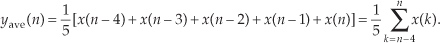
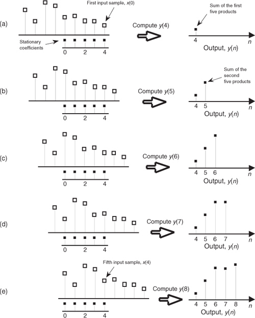
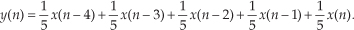
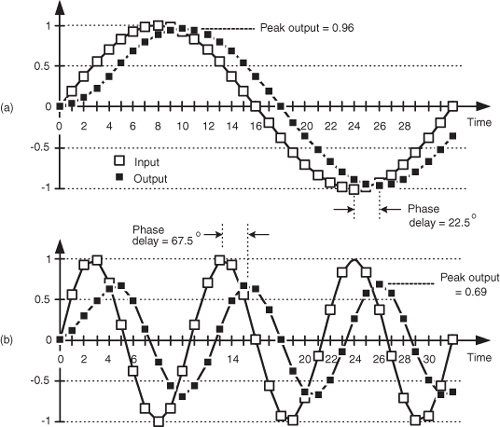
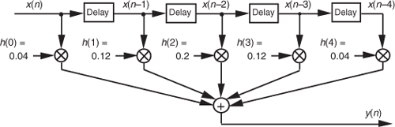
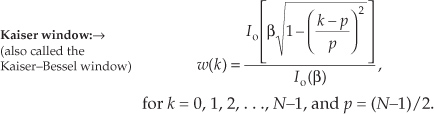
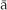
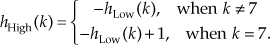

5 Finite Impulse Response Filters
The filtering of digitized data, if not the most fundamental, is certainly the oldest discipline in the field of digital signal processing. Digital filtering’s origins go back 50 years. The growing availability of digital computers in the early 1950s led to efforts in the smoothing of discrete sampled data and the analysis of discrete data control systems. However, it wasn’t until the early to mid-1960s, around the time the Beatles came to America, that the analysis and development of digital equivalents of analog filters began in earnest. That’s when digital signal processing experts realized that computers could go beyond the mere analysis of digitized signals into the domain of actually changing signal characteristics through filtering. Today, digital filtering is so widespread that the quantity of literature pertaining to it exceeds that of any other topic in digital signal processing. In this chapter, we introduce the fundamental attributes of digital filters, learn how to quantify their performance, and review the principles associated with the design of finite impulse response digital filters.
So let’s get started by illustrating the concept of filtering a time-domain signal as shown in Figure 5-1.
Figure 5-1 Filters: (a) an analog filter with a noisy tone input and a reduced-noise tone output; (b) the digital equivalent of the analog filter.
In general, filtering is the processing of a time-domain signal resulting in some change in that signal’s original spectral content. The change is usually the reduction, or filtering out, of some unwanted input spectral components; that is, filters allow certain frequencies to pass while attenuating other frequencies. Figure 5-1 shows both analog and digital versions of a filtering process. Where an analog filter operates on a continuous signal, a digital filter processes a sequence of discrete sample values. The digital filter in Figure 5-1(b), of course, can be a software program in a computer, a programmable hardware processor, or a dedicated integrated circuit. Traditional linear digital filters typically come in two flavors: finite impulse response (FIR) filters and infinite impulse response (IIR) filters. Because FIR filters are the simplest type of digital filter to analyze, we’ll examine them in this chapter and cover IIR filters in Chapter 6.
5.1 An Introduction to Finite Impulse Response (FIR) Filters
Given a finite duration of nonzero input values, an FIR filter will always have a finite duration of nonzero output values, and that’s how FIR filters got their name. So, if the FIR filter’s input suddenly becomes a sequence of all zeros, the filter’s output will eventually be all zeros. While not sounding all that unusual, this characteristic is, however, very important, and we’ll soon find out why, as we learn more about digital filters.
FIR filters use addition to calculate their outputs in a manner much the same as the process of averaging uses addition. In fact, averaging is a kind of FIR filter that we can illustrate with an example. Let’s say we’re counting the number of cars that pass over a bridge every minute, and we need to know the average number of cars per minute over five-minute intervals; that is, every minute we’ll calculate the average number of cars/minute over the last five minutes. If the results of our car counting for the first ten minutes are those values shown in the center column of Table 5-1, then the average number of cars/minute over the previous five one-minute intervals is listed in the right column of the table. We’ve added the number of cars for the first five one-minute intervals and divided by 5 to get our first five-minute average output value, (10+22+24+42+37)/5 = 27. Next we’ve averaged the number of cars/minute for the second to the sixth one-minute intervals to get our second five-minute average output of 40.4. Continuing, we average the number of cars/minute for the third to the seventh one-minute intervals to get our third average output of 53.8, and so on. With the number of cars/minute for the one-minute intervals represented by the dashed line in Figure 5-2, we show our five-minute average output as the solid line. (Figure 5-2 shows cars/minute input values beyond the first ten minutes listed in Table 5-1 to illustrate a couple of important ideas to be discussed shortly.)
Table 5-1 Values for the Averaging Example
Figure 5-2 Averaging the number of cars/minute. The dashed line shows the individual cars/minute, and the solid line is the number of cars/minute averaged over the last five minutes.
There’s much to learn from this simple averaging example. In Figure 5-2, notice that the sudden changes in our input sequence of cars/minute are flattened out by our averager. The averager output sequence is considerably smoother than the input sequence. Knowing that sudden transitions in a time sequence represent high-frequency components, we can say that our averager is behaving like a lowpass filter and smoothing sudden changes in the input. Is our averager an FIR filter? It sure is—no previous averager output value is used to determine a current output value; only input values are used to calculate output values. In addition, we see that, if the bridge were suddenly closed at the end of the 19th minute, the dashed line immediately goes to zero cars/minute at the end of the 20th minute, and the averager’s output in Figure 5-2 approaches and settles to a value of zero by the end of the 24th minute.
Figure 5-2 shows the first averager output sample occurring at the end of the 5th minute because that’s when we first have five input samples to calculate a valid average. The 5th output of our averager can be denoted as yave(5) where
In the general case, if the kth input sample is x(k), then the nth output is

Look at Eq. (5-2) carefully now. It states that the nth output is the average of the nth input sample and the four previous input samples.
We can formalize the digital filter nature of our averager by creating the block diagram in Figure 5-3 showing how the averager calculates its output samples.
Figure 5-3 Averaging filter block diagram when the fifth input sample value, 37, is applied.
This block diagram, referred to as the filter structure, is a physical depiction of how we might calculate our averaging filter outputs with the input sequence of values shifted, in order, from left to right along the top of the filter as new output calculations are performed. This structure, implementing Eqs. (5-1) and (5-2), shows those values used when the first five input sample values are available. The delay elements in Figure 5-3, called unit delays, merely indicate a shift register arrangement where input sample values are temporarily stored during an output calculation.
In averaging, we add five numbers and divide the sum by 5 to get our answer. In a conventional FIR filter implementation, we can just as well multiply each of the five input samples by the coefficient 1/5 and then perform the summation as shown in Figure 5-4(a). Of course, the two methods in Figures 5-3 and 5-4(a) are equivalent because Eq. (5-2) describing the structure shown in Figure 5-3 is equivalent to
Figure 5-4 Alternate averaging filter structure: (a) input values used for the fifth output value; (b) input values used for the sixth output value; (c) input values used for the seventh output value.
which describes the structure in Figure 5-4(a).†
† We’ve used the venerable distributive law for multiplication and addition of scalars, a(b+c+d) = ab+ac+ad, in moving Eq. (5-2)’s factor of 1/5 inside the summation in Eq. (5-3).
Let’s make sure we understand what’s happening in Figure 5-4(a). Each of the first five input values is multiplied by 1/5, and the five products are summed to give the fifth filter output value. The left-to-right sample shifting is illustrated in Figures 5-4(b) and 5-4(c). To calculate the filter’s sixth output value, the input sequence is right-shifted, discarding the first input value of 10, and the sixth input value, 77, is accepted on the left. Likewise, to calculate the filter’s seventh output value, the input sequence is right-shifted, discarding the second value of 22, and the seventh input value, 89, arrives on the left. So, when a new input sample value is applied, the filter discards the oldest sample value, multiplies the samples by the coefficients of 1/5, and sums the products to get a single new output value. The filter’s structure using this bucket brigade shifting process is often called a transversal filter due to the cross-directional flow of the input samples. Because we tap off five separate input sample values to calculate an output value, the structure in Figure 5-4 is called a 5-tap tapped-delay line FIR filter, in digital filter vernacular.
One important and, perhaps, most interesting aspect of understanding FIR filters is learning how to predict their behavior when sinusoidal samples of various frequencies are applied to the input, i.e., how to estimate their frequency-domain response. Two factors affect an FIR filter’s frequency response: the number of taps and the specific values used for the multiplication coefficients. We’ll explore these two factors using our averaging example and, then, see how we can use them to design FIR filters. This brings us to the point where we have to introduce the C word: convolution. (Actually, we already slipped a convolution equation in on the reader without saying so. It was Eq. (5-3), and we’ll examine it in more detail later.)
5.2 Convolution in FIR Filters
OK, here’s where we get serious about understanding the mathematics behind FIR filters. We can graphically depict Eq. (5-3)’s and Figure 5-4’s calculations as shown in Figure 5-5. Also, let’s be formal and use the standard notation of digital filters for indexing the input samples and the filter coefficients by starting with an initial index value of zero; that is, we’ll call the initial input value the 0th sample x(0). The next input sample is represented by the term x(1), the following input sample is called x(2), and so on. Likewise, our five coefficient values will be indexed from zero to four, h(0) through h(4). (This indexing scheme makes the equations describing our example consistent with conventional filter notation found in the literature.)
Figure 5-5 Averaging filter convolution: (a) first five input samples aligned with the stationary filter coefficients, index n = 4; (b) input samples shift to the right and index n = 5; (c) index n = 6; (d) index n = 7; (e) index n = 8.

In Eq. (5-3) we used the factor of 1/5 as the filter coefficients multiplied by our averaging filter’s input samples. The left side of Figure 5-5 shows the alignment of those coefficients, black squares, with the filter input sample values represented by the white squares. Notice in Figures 5-5(a) through 5-5(e) that we’re marching the input samples to the right, and, at each step, we calculate the filter output sample value using Eq. (5-3). The output samples on the right side of Figure 5-5 match the first five values represented by the black squares in Figure 5-2. The input samples in Figure 5-5 are those values represented by the white squares in Figure 5-2. Notice that the time order of the inputs in Figure 5-5 has been reversed from the input sequence order in Figure 5-2! That is, the input sequence has been flipped in the time domain in Figure 5-5. This time order reversal is what happens to the input data using the filter structure in Figure 5-4.
Repeating the first part of Eq. (5-3) and omitting the subscript on the output term, our original FIR filter’s y(n)th output is given by

Because we’ll explore filters whose coefficients are not all the same value, we need to represent the individual filter coefficients by a variable, such as the term h(k), for example. Thus we can rewrite the averaging filter’s output from Eq. (5-4) in a more general way as
where h(0) through h(4) all equal 1/5. Equation (5-5) is a concise way of describing the filter structure in Figure 5-4 and the process illustrated in Figure 5-5.
Let’s take Eq. (5-5) one step further and say, for a general M-tap FIR filter, the nth output is
Well, there it is. Eq. (5-6) is the infamous convolution equation as it applies to digital FIR filters. Beginners in the field of digital signal processing often have trouble understanding the concept of convolution. It need not be that way. Eq. (5-6) is merely a series of multiplications followed by the addition of the products. The process is actually rather simple. We just flip the time order of an input sample sequence and start stepping the flipped sequence across the filter’s coefficients as shown in Figure 5-5. For each new filter input sample, we sum a series of products to compute a single filter output value.
Let’s pause for a moment and introduce a new term that’s important to keep in mind, the impulse response. The impulse response of a filter is exactly what its name implies—it’s the filter’s output time-domain sequence when the input is a single unity-valued sample (impulse) preceded and followed by zero-valued samples. Figure 5-6 illustrates this idea in the same way we determined the filter’s output sequence in Figure 5-5. The left side of Figure 5-6 shows the alignment of the filter coefficients, black squares, with the filter input impulse sample values represented by the white squares. Again, in Figures 5-6(a) through 5-6(e) we’re shifting the input samples to the right, and, at each step, we calculate the filter output sample value using Eq. (5-4). The output samples on the right side of Figure 5-6 are the filter’s impulse response. Notice the key point here: the FIR filter’s impulse response is identical to the five filter coefficient values. For this reason, the terms FIR filter coefficients and impulse response are synonymous. Thus, when someone refers to the impulse response of an FIR filter, they’re also talking about the coefficients. Because there are a finite number of coefficients, the impulse response will be finite in time duration (finite impulse response, FIR).
Figure 5-6 Convolution of filter coefficients and an input impulse to obtain the filter’s output impulse response: (a) impulse sample aligned with the first filter coefficient, index n = 4; (b) impulse sample shifts to the right and index n = 5; (c) index n = 6; (d) index n = 7; (e) index n = 8.
Returning to our averaging filter, recall that coefficients (or impulse response) h(0) through h(4) were all equal to 1/5. As it turns out, our filter’s performance can be improved by using coefficients whose values are not all the same. By “performance” we mean how well the filter passes desired signals and attenuates unwanted signals. We judge that performance by determining the shape of the filter’s frequency-domain response that we obtain by the convolution property of linear systems. To describe this concept, let’s repeat Eq. (5-6) using the abbreviated notation of
where the * symbol means convolution. (Equation 5-7 is read as “y of n equals the convolution of h of k and x of n.”) The process of convolution, as it applies to FIR filters, is as follows: the discrete Fourier transform (DFT) of the convolution of a filter’s impulse response (coefficients) and an input sequence is equal to the product of the spectrum of the input sequence and the DFT of the impulse response. The idea we’re trying to convey here is that if two time-domain sequences h(k) and x(n) have DFTs of H(m) and X(m), respectively, then the DFT of y(n) = h(k) * x(n) is H(m) · X(m). Making this point in a more compact way, we state this relationship with the expression
With IDFT indicating the inverse DFT, Eq. (5-8) indicates that two sequences resulting from h(k)*x(n) and H(m)·X(m) are Fourier transform pairs. So taking the DFT of h(k)*x(n) gives us the product H(m)·X(m) that is the spectrum of our filter output Y(m). Likewise, we can determine h(k)*x(n) by taking the inverse DFT of H(m)·X(m). The very important conclusion to learn from Eq. (5-8) is that convolution in the time domain is equivalent to multiplication in the frequency domain. To help us appreciate this principle, Figure 5-7 sketches the relationship between convolution in the time domain and multiplication in the frequency domain. The process of convolution with regard to linear systems is discussed in more detail in Section 5.9. The beginner is encouraged to review that material to get a general idea of why and when the convolution process can be used to analyze digital filters.
Figure 5-7 Relationships of convolution as applied to FIR digital filters.
Equation (5-8) and the relationships in Figure 5-7 tell us what we need to do to determine the frequency response of an FIR filter. The product X(m)·H(m) is the DFT of the filter output. Because X(m) is the DFT of the filter’s input sequence, the frequency response of the filter is then defined as H(m), the DFT of the filter’s impulse response h(k).† Getting back to our original problem, we can determine our averaging filter’s frequency-domain response by taking the DFT of the individual filter coefficients (impulse response) in Eq. (5-4). If we take the five h(k) coefficient values of 1/5 and append 59 zeros, we have the sequence depicted in Figure 5-8(a). Performing a 64-point DFT on that sequence, and normalizing the DFT magnitudes, gives us the filter’s frequency magnitude response |H(m)| in Figure 5-8(b) and phase response shown in Figure 5-8(c).†† H(m) is our old friend, the sin(x)/x function from Section 3.13.
† We use the term impulse response here, instead of coefficients, because this concept also applies to IIR filters. IIR filter frequency responses are also equal to the DFT of their impulse responses.
†† There’s nothing sacred about using a 64-point DFT here. We could just as well have appended only enough zeros to take a 16- or 32-point FFT. We chose 64 points to get a frequency resolution that would make the shape of the response in Figure 5-8(b) reasonably smooth. Remember, the more points in the FFT, the finer the frequency granularity—right?
Figure 5-8 Averaging FIR filter: (a) filter coefficient sequence h(k) with appended zeros; (b) normalized discrete frequency magnitude response |H(m)| of the h(k) filter coefficients; (c) phase-angle response of H(m) in degrees.
Let’s relate the discrete frequency response samples in Figures 5-8(b) and 5-8(c) to the physical dimension of the sample frequency fs. We know, from Section 3.5 and our experience with the DFT, that the m = N/2 discrete frequency sample, m = 32 in this case, is equal to the folding frequency, or half the sample rate, fs/2. Keeping this in mind, we can convert the discrete frequency axis in Figure 5-8 to that shown in Figure 5-9. In Figure 5-9(a), notice that the filter’s magnitude response is, of course, periodic in the frequency domain with a period of the equivalent sample rate fs. Because we’re primarily interested in the filter’s response between 0 and half the sample rate, Figure 5-9(c) shows that frequency band in greater detail, affirming the notion that averaging behaves like a lowpass filter. It’s a relatively poor lowpass filter compared to an arbitrary, ideal lowpass filter indicated by the dashed lines in Figure 5-9(c), but our averaging filter will attenuate higher-frequency inputs relative to its response to low-frequency input signals.
Figure 5-9 Averaging FIR filter frequency response shown as continuous curves: (a) normalized frequency magnitude response, |H(m)|; (b) phase-angle response of H(m) in degrees; (c) the filter’s magnitude response between zero Hz and half the sample rate, fs/2 Hz.
We can demonstrate this by way of example. Suppose we applied a low-frequency sinewave to a 5-point averaging FIR filter as shown by the white squares in Figure 5-10(a). The input sinewave’s frequency is fs/32 Hz and its peak amplitude is unity. The filter’s output sequence is shown by the black squares.
Figure 5-10 Averaging FIR filter input and output responses: (a) with an input sinewave of frequency fs/32; (b) with an input sinewave of frequency 3fs/32.

Figure 5-10(a) is rich in information! First, the filter’s output is a sinewave of the same frequency as the input. This is a characteristic of a linear system. We apply a single sinewave input, and the output will be a single sinewave (shifted in phase and perhaps reduced in amplitude) of the same frequency as the input. Second, notice that the initial four output samples are not exactly sinusoidal. Those output samples are the transient response of the filter. With tapped-delay line FIR filters, the sample length of that transient response is equal to the number of filter unit-delay elements D, after which the filter’s output begins its steady-state time response.
The above transient response property is important. It means that tapped-delay line FIR filter outputs are not valid until D+1 input samples have been applied to the filter. That is, the output samples are not valid until the filter’s delay line is filled with input data. So, for an FIR filter having D = 70 unit-delay elements the first 70 output samples are not valid and would be ignored in practice. WARNING: There are tapped-delay line FIR filters, used in practice, that have more unit-delay elements than nonzero-valued tap coefficients. The transient response length for those filters, measured in samples, is equal to the number of unit-delay elements, D (and is unrelated to the number of nonzero-valued tap coefficients).
The filter’s output sinewave peak amplitude is reduced to a value of 0.96 and the output sinewave is delayed from the input by a phase angle of 22.5 degrees. Notice that the time delay between the input and output sinewaves, in Figure 5-10(a), is two samples in duration. (Although we discuss this time delay topic in more detail later, for now we’ll just say that, because the filter’s coefficients are symmetrical, the input/output delay measured in samples is equal to half the number of unit-delay elements in the filter’s tapped-delay line.)
Next, if we applied a higher-frequency sinewave of 3fs/32 Hz to our 5-tap FIR filter as shown in Figure 5-10(b), the filter output is a sinewave of frequency 3fs/32 Hz and its peak amplitude is even further reduced to a value of 0.69. That’s the nature of lowpass filters—they attenuate higher-frequency inputs more than they attenuate low-frequency inputs. As in Figure 5-10(a), the time delay between the input and output sinewaves, in Figure 5-10(b), is two samples in duration (corresponding to a phase-angle delay of 67.5 degrees). That property, where the input/output delay does not depend on frequency, is a very beneficial property of FIR filters having symmetrical coefficients. We’ll discuss this important issue again later in this chapter. In Figure 5-10(b) we see that the nonsinusoidal filter output transient response is even more obvious than it was in Figure 5-10(a).
Although the output amplitudes and phase delays in Figure 5-10 were measured values from actually performing a 5-tap FIR filter process on the input sinewaves’ samples, we could have obtained those amplitude and phase delay values directly from Figures 5-8(b) and 5-8(c). The point is, we don’t have to implement an FIR filter and apply various sinewave inputs to discover what its frequency response will be. We need merely take the DFT of the FIR filter’s coefficients (impulse response) to determine the filter’s frequency response as we did for Figure 5-8.
Figure 5-11 is another depiction of how well our 5-tap averaging FIR filter performs, where the dashed line is the filter’s magnitude response |H(m)|, and the shaded line is the |X(m)| magnitude spectrum of the filter’s input values (the white squares in Figure 5-2). The solid line is the magnitude spectrum of the filter’s output sequence, which is shown by the black squares in Figure 5-2. So in Figure 5-11, the solid output spectrum is the product of the dashed filter response curve and the shaded input spectrum, or |X(m)·H(m)|. Again, we see that our averager does indeed attenuate the higher-frequency portion of the input spectrum.
Figure 5-11 Averaging FIR filter input magnitude spectrum, frequency magnitude response, and output magnitude spectrum.

Let’s pause for a moment to let all of this soak in a little. So far we’ve gone through the averaging filter example to establish that
• FIR filters perform time-domain convolution by summing the products of the shifted input samples and a sequence of filter coefficients,
• an FIR filter’s output sequence is equal to the convolution of the input sequence and a filter’s impulse response (coefficients),
• an FIR filter’s frequency response is the DFT of the filter’s impulse response,
• an FIR filter’s output spectrum is the product of the input spectrum and the filter’s frequency response, and
• convolution in the time domain and multiplication in the frequency domain are Fourier transform pairs.
OK, here’s where FIR filters start to get really interesting. Let’s change the values of the five filter coefficients to modify the frequency response of our 5-tap lowpass filter. In fact, Figure 5-12(a) shows our original five filter coefficients and two other arbitrary sets of 5-tap coefficients. Figure 5-12(b) compares the frequency magnitude responses of those three sets of coefficients. Again, the frequency responses are obtained by taking the DFT of the three individual sets of coefficients and plotting the magnitude of the transforms, as we did for Figure 5-9(c). So we see three important characteristics in Figure 5-12. First, as we expected, different sets of coefficients give us different frequency magnitude responses. Second, a sudden change in the values of the coefficient sequence, such as the 0.2 to 0 transition in the first coefficient set, causes ripples, or sidelobes, in the frequency response. Third, if we minimize the suddenness of the changes in the coefficient values, such as the third set of coefficients in Figure 5-12(a), we reduce the sidelobe ripples in the frequency response. However, reducing the sidelobes results in increasing the main lobe width of our lowpass filter. (As we’ll see, this is exactly the same effect encountered in the discussion of window functions used with the DFT in Section 3.9.)
Figure 5-12 Three sets of 5-tap lowpass filter coefficients: (a) sets of coefficients: 0.2, 0.2, 0.2, 0.2, 0.2; 0.1, 0.2, 0.2, 0.2, 0.1; and 0.04, 0.12, 0.2, 0.12, 0.04; (b) frequency magnitude response of three lowpass FIR filters using those sets of coefficients.
To reiterate the function of the filter coefficients, Figure 5-13 shows the 5-tap FIR filter structure using the third set of coefficients from Figure 5-12. The implementation of constant-coefficient transversal FIR filters does not get any more complicated than that shown in Figure 5-13. It’s that simple. We can have a filter with more than 5 taps, but the input signal sample shifting, the multiplications by the constant coefficients, and the summation are all there is to it. (By constant coefficients, we don’t mean coefficients whose values are all the same; we mean coefficients whose values remain unchanged, or time invariant. There is a class of digital filters, called adaptive filters, whose coefficient values are periodically changed to adapt to changing input signal parameters. While we won’t discuss these adaptive filters in this introductory text, their descriptions are available in the literature[1–5].)
Figure 5-13 Five-tap lowpass FIR filter implementation using the coefficients 0.04, 0.12, 0.2, 0.12, and 0.04.

So far, our description of an FIR filter implementation has been presented from a hardware perspective. In Figure 5-13, to calculate a single filter output sample, five multiplications and five additions must take place before the arrival of the next input sample value. In a software implementation of a 5-tap FIR filter, however, all of the input data samples would be previously stored in memory. The software filter routine’s job, then, is to access different five-sample segments of the x(n) input data space, perform the calculations shown in Figure 5-13, and store the resulting filter y(n) output sequence in an array of memory locations.†
† In reviewing the literature of FIR filters, the reader will often find the term z−1 replacing the delay function in Figure 5-13. This equivalence is explained in the next chapter when we study IIR filters.
Now that we have a basic understanding of what a digital FIR filter is, let’s see what effect is had by using more than 5 filter taps by learning to design FIR filters.
5.3 Lowpass FIR Filter Design
OK, instead of just accepting a given set of FIR filter coefficients and analyzing their frequency response, let’s reverse the process and design our own lowpass FIR filter. The design procedure starts with the determination of a desired frequency response followed by calculating the filter coefficients that will give us that response. There are two predominant techniques used to design FIR filters: the window method and the so-called optimum method. Let’s discuss them in that order.
5.3.1 Window Design Method
The window method of FIR filter design (also called the Fourier series method) begins with our deciding what frequency response we want for our lowpass filter. We can start by considering a continuous lowpass filter, and simulating that filter with a digital filter. We’ll define the continuous frequency response H(f) to be ideal, i.e., a lowpass filter with unity gain at low frequencies and zero gain (infinite attenuation) beyond some cutoff frequency, as shown in Figure 5-14(a). Representing this H(f) response by a discrete frequency response is straightforward enough because the idea of a discrete frequency response is essentially the same as a continuous frequency response—with one important difference. As described in Sections 2.2 and 3.13, discrete frequency-domain representations are always periodic with the period being the sample rate fs. The discrete representation of our ideal, continuous lowpass filter H(f) is the periodic response H(m) depicted by the frequency-domain samples in Figure 5-14(b).
Figure 5-14 Lowpass filter frequency responses: (a) continuous frequency response H(f); (b) periodic, discrete frequency response H(m).
We have two ways to determine our lowpass filter’s time-domain coefficients. The first way is algebraic:
1. Develop an expression for the discrete frequency response H(m).
2. Apply that expression to the inverse DFT equation to get the time domain h(k).
3. Evaluate that h(k) expression as a function of time index k.
The second method is to define the individual frequency-domain samples representing H(m) and then have a software routine perform the inverse DFT of those samples, giving us the FIR filter coefficients. In either method, we need only define the periodic H(m) over a single period of fs Hz. As it turns out, defining H(m) in Figure 5-14(b) over the frequency span −fs/2 to fs/2 is the easiest form to analyze algebraically, and defining H(m) over the frequency span 0 to fs is the best representation if we use the inverse DFT to obtain our filter’s coefficients. Let’s try both methods to determine the filter’s time-domain coefficients.
In the algebraic method, we can define an arbitrary discrete frequency response H(m) using N samples to cover the −fs/2 to fs/2 frequency range and establish K unity-valued samples for the passband of our lowpass filter as shown in Figure 5-15. To determine h(k) algebraically we need to take the inverse DFT of H(m) in the form of
Figure 5-15 Arbitrary, discrete lowpass FIR filter frequency response defined over N frequency-domain samples covering the frequency range of fs Hz.
where our time-domain index is k. The solution to Eq. (5-9), derived in Section 3.13 as Eq. (3-59), is repeated here as
If we evaluate Eq. (5-10) as a function of k, we get the sequence shown in Figure 5-16, taking the form of the classic sin(x)/x function. By reviewing the material in Section 3.13, it’s easy to see the great deal of algebraic manipulation required to arrive at Eq. (5-10) from Eq. (5-9). So much algebra, in fact, with its many opportunities for making errors, that digital filter designers like to avoid evaluating Eq. (5-9) algebraically. They prefer to use software routines to perform inverse DFTs (in the form of an inverse FFT) to determine h(k), and so will we.
Figure 5-16 Time-domain h(k) coefficients obtained by evaluating Eq. (5-10).
We can demonstrate the software inverse DFT method of FIR filter design with an example. Let’s say we need to design a lowpass FIR filter simulating the continuous frequency response shown in Figure 5-17(a). The discrete representation of the filter’s frequency response H(m) is shown in Figure 5-17(b), where we’ve used N = 32 points to represent the frequency-domain variable H(f). Because it’s equivalent to Figure 5-17(b) but avoids the negative values of the frequency index m, we represent the discrete frequency samples over the range 0 to fs in Figure 5-17(c), as opposed to the −fs/2 to +fs/2 range in Figure 5-17(b). OK, we’re almost there. Using a 32-point inverse FFT to implement a 32-point inverse DFT of the H(m) sequence in Figure 5-17(c), we get the 32 h(k) values depicted by the dots from k = −15 to k = 16 in Figure 5-18(a).† We have one more step to perform. Because we want our final 31-tap h(k) filter coefficients to be symmetrical with their peak value in the center of the coefficient sample set, we drop the k = 16 sample and shift the k index to the left from Figure 5-18(a), giving us the desired sin(x)/x form of h(k) as shown in Figure 5-18(b). This shift of the index k will not change the frequency magnitude response of our FIR filter. (Remember from our discussion of the DFT shifting theorem in Section 3.6 that a shift in the time domain manifests itself only as a linear phase shift in the frequency domain with no change in the frequency-domain magnitude.) The sequence in Figure 5-18(b), then, is now the coefficients we use in the convolution process of Figure 5-5 to implement a lowpass FIR filter.
† If you want to use this FIR design method but only have a forward FFT software routine available, Section 13.6 shows a slick way to perform an inverse FFT with the forward FFT algorithm.
Figure 5-17 An ideal lowpass filter: (a) continuous frequency response H(f); (b) discrete response H(m) over the range −fs/2 to fs/2 Hz; (c) discrete response H(m) over the range 0 to fs Hz.
Figure 5-18 Inverse DFT of the discrete response in Figure 5-17(c): (a) normal inverse DFT indexing for k; (b) symmetrical coefficients used for a 31-tap lowpass FIR filter.
It’s important to demonstrate that the more h(k) terms we use as filter coefficients, the closer we’ll approximate our ideal lowpass filter response. Let’s be conservative, just use the center nine h(k) coefficients, and see what our filter response looks like. Again, our filter’s magnitude response in this case will be the DFT of those nine coefficients as shown on the right side of Figure 5-19(a). The ideal filter’s frequency response is also shown for reference as the dashed curve. (To show the details of its shape, we’ve used a continuous curve for |H(m)| in Figure 5-19(a), but we have to remember that |H(m)| is really a sequence of discrete values.) Notice that using nine coefficients gives us a lowpass filter, but it’s certainly far from ideal. Using more coefficients to improve our situation, Figure 5-19(b) shows 19 coefficients and their corresponding frequency magnitude response that is beginning to look more like our desired rectangular response. Notice that magnitude fluctuations, or ripples, are evident in the passband of our H(m) filter response. Continuing, using all 31 of the h(k) values for our filter coefficients results in the frequency response in Figure 5-19(c). Our filter’s response is getting better (approaching the ideal), but those conspicuous passband magnitude ripples are still present.
Figure 5-19 Coefficients and frequency responses of three lowpass filters: (a) 9-tap FIR filter; (b) 19-tap FIR filter; (c) frequency response of the full 31-tap FIR filter.

It’s important that we understand why those passband ripples are in the lowpass FIR filter response in Figure 5-19. Recall the above discussion of convolving the 5-tap averaging filter coefficients, or impulse response, with an input data sequence to obtain the averager’s output. We established that convolution in the time domain is equivalent to multiplication in the frequency domain, which we symbolized with Eq. (5-8) and repeat here as
This association between convolution in the time domain and multiplication in the frequency domain, sketched in Figure 5-7, indicates that if two time-domain sequences h(k) and x(n) have DFTs of H(m) and X(m), respectively, then the DFT of h(k) * x(n) is H(m) · X(m). No restrictions whatsoever need be placed on what the time-domain sequences h(k) and x(n) in Eq. (5-11) actually represent. As detailed later in Section 5.9, convolution in one domain is equivalent to multiplication in the other domain, allowing us to state that multiplication in the time domain is equivalent to convolution in the frequency domain, or
Now we’re ready to understand why the magnitude ripples are present in Figure 5-19.
Rewriting Eq. (5-12) and replacing the h(k) and x(n) expressions with h∞(k) and w(k), respectively,
Let’s say that h∞(k) represents an infinitely long sin(x)/x sequence of ideal lowpass FIR filter coefficients and that w(k) represents a window sequence that we use to truncate the sin(x)/x terms as shown in Figure 5-20. Thus, the w(k) sequence is a finite-length set of unity values and its DFT is W(m). The length of w(k) is merely the number of coefficients, or taps, we intend to use to implement our lowpass FIR filter. With h∞(k) defined as such, the product h∞(k) · w(k) represents the truncated set of filter coefficients h(k) in Figures 5-19(a) and 5-19(b). So, from Eq. (5-13), the FIR filter’s true frequency response H(m) is the convolution
Figure 5-20 Infinite h∞(k) sequence windowed by w(k) to define the final filter coefficients h(k).
We depict this convolution in Figure 5-21 where, to keep the figure from being so busy, we show H∞(m) (the DFT of the h∞(k) coefficients) as the gray rectangle. Keep in mind that it’s really a sequence of constant-amplitude sample values.
Figure 5-21 Convolution W(m)*H∞(m): (a) unshifted W(m) and H∞(m); (b) shift of W(m) leading to ripples within H(m)’s positive-frequency passband; (c) shift of W(m) causing response roll-off near H(m)’s positive cutoff frequency; (d) shift of W(m) causing ripples beyond H(m)’s positive cutoff frequency.
Let’s look at Figure 5-21(a) very carefully to see why all three |H(m)|s exhibit passband ripple in Figure 5-19. We can view a particular sample value of the H(m) = H∞(m) * W(m) convolution as being the sum of the products of H∞(m) and W(m) for a particular frequency shift of W(m). H∞(m) and the unshifted W(m) are shown in Figure 5-21(a.) With an assumed value of unity for all of H∞(m), a particular H(m) value is now merely the sum of the W(m) samples that overlap the H∞(m) rectangle. So, with a W(m) frequency shift of 0 Hz, the sum of the W(m) samples that overlap the H∞(m) rectangle in Figure 5-21(a) is the value of H(m) at 0 Hz. As W(m) is shifted to the right to give us additional positive-frequency H(m) values, we can see that the sum of the positive and negative values of W(m) under the rectangle oscillates during the shifting of W(m). As the convolution shift proceeds, Figure 5-21(b) shows why there are ripples in the passband of H(m)—again, the sum of the positive and negative W(m) samples under the H∞(m) rectangle continues to vary as the W(m) function is shifted. The W(m) frequency shift, indicated in Figure 5-21(c), where the peak of W(m)’s main lobe is now outside the H∞(m) rectangle, corresponds to the frequency where H(m)’s passband begins to roll off. Figure 5-21(d) shows that, as the W(m) shift continues, there will be ripples in H(m) beyond the positive cutoff frequency.† The point of all of this is that the ripples in H(m) are caused by the sidelobes of W(m).
† In Figure 5-21(b), had we started to shift W(m) to the left in order to determine the negative-frequency portion of H(m), we would have obtained the mirror image of the positive-frequency portion of H(m).
Figure 5-22 helps us answer the question “How many sin(x)/x coefficients do we have to use (or how wide must w(k) be) to get nice sharp falling edges and no ripples in our H(m) passband?” The answer is that we can’t get there from here. It doesn’t matter how many sin(x)/x coefficients (filter taps) we use; there will always be filter passband ripple. As long as w(k) is a finite number of unity values (i.e., a rectangular window of finite width), there will be sidelobe ripples in W(m), and this will induce passband ripples in the final H(m) frequency response. To illustrate that increasing the number of sin(x)/x coefficients doesn’t reduce passband ripple, we repeat the 31-tap lowpass filter response in Figure 5-22(a). The frequency response, using 63 coefficients, is shown in Figure 5-22(b), and the passband ripple remains. We can make the filter’s transition region narrower using additional h(k) filter coefficients, but we cannot eliminate the passband ripple. That ripple, known as Gibbs’s phenomenon, manifests itself anytime a function (w(k) in this case) with an instantaneous discontinuity is represented by a Fourier series[6–8]. No finite set of sinusoids will be able to change fast enough to be exactly equal to an instantaneous discontinuity. Another way to state this Gibbs’s dilemma is that, no matter how wide our w(k) window is, W(m) will always have sidelobe ripples. As shown in Figure 5-22(b), we can use more coefficients by extending the width of the rectangular w(k) to narrow the filter transition region, but a wider w(k) does not eliminate the filter passband ripple, nor does it even reduce their peak-to-peak ripple magnitudes, as long as w(k) has sudden discontinuities.
Figure 5-22 Passband ripple and transition regions: (a) for a 31-tap lowpass filter; (b) for a 63-tap lowpass filter.

5.3.2 Windows Used in FIR Filter Design
OK. The good news is that we can minimize FIR passband ripple with window functions the same way we minimized DFT leakage in Section 3.9. Here’s how. Looking back at Figure 5-20, by truncating the infinitely long h∞(k) sequence through multiplication by the rectangular w(k), our final h(k) exhibited ripples in the frequency-domain passband. Figure 5-21 shows us that the passband ripples were caused by W(m)’s sidelobes that, in turn, were caused by the sudden discontinuities from zero to one and one to zero in w(k). If we think of w(k) in Figure 5-20 as a rectangular window, then it is w(k)’s abrupt amplitude changes that are the source of our filter passband ripple. The window FIR design method is the technique of reducing w(k)’s discontinuities by using window functions other than the rectangular window.
Consider Figure 5-23 to see how a nonrectangular window function can be used to design low-ripple FIR digital filters. Imagine if we replaced Figure 5-20’s rectangular w(k) with the Blackman window function whose discrete values are defined as
Figure 5-23 Coefficients and frequency response of a 31-tap Blackman-windowed FIR filter: (a) defining the windowed filter coefficients h(k); (b) low-ripple 31-tap frequency response; (c) low-ripple 63-tap frequency response.
This situation is depicted for N = 31 in Figure 5-23(a), where Eq. (5-15)’s w(k) looks very much like the Hanning window function in Figure 3-17(a). This Blackman window function results in the 31 smoothly tapered h(k) coefficients at the bottom of Figure 5-23(a). Notice two things about the resulting H(m) in Figure 5-23(b). First, the good news. The passband ripples are greatly reduced from those evident in Figure 5-22(a)—so our Blackman window function did its job. Second, the price we paid for reduced passband ripple is a wider H(m) transition region. We can get a steeper filter response roll-off by increasing the number of taps in our FIR filter. Figure 5-23(c) shows the improved frequency response had we used a 63-coefficient Blackman window function for a 63-tap FIR filter. So using a nonrectangular window function reduces passband ripple at the expense of slower passband to stopband roll-off.
A graphical comparison of the frequency responses for the rectangular and Blackman windows is provided in Figure 5-24. (The curves in Figure 5-24 were obtained for the window functions defined by 16 discrete samples, to which 496 zeros were appended, applied to a 512-point DFT.) The sidelobe magnitudes of the Blackman window’s |W(m)| are too small to see on a linear scale. We can see those sidelobe details by plotting the two windows’ frequency responses on a logarithmic scale and normalizing each plot so that their main lobe peak values are both zero dB. For a given window function, we can get the log magnitude response of WdB(m) by using the expression
Figure 5-24 Rectangular versus Blackman window frequency magnitude responses: (a) |W(m)| on a linear scale; (b) normalized logarithmic scale of WdB(m).
(The |W(0)| term in Eq. (5-16) is the magnitude of W(m) at the peak of the main lobe when m = 0.) Figure 5-24(b) shows us the greatly reduced sidelobe levels of the Blackman window and how that window’s main lobe is almost three times as wide as the rectangular window’s main lobe.
Of course, we could have used any of the other window functions, discussed in Section 3.9, for our lowpass FIR filter. That’s why this FIR filter design technique is called the window design method. We pick a window function and multiply it by the sin(x)/x values from H∞(m) in Figure 5-23(a) to get our final h(k) filter coefficients. It’s that simple. Before we leave the window method of FIR filter design, let’s introduce two other interesting window functions.
Although the Blackman window and those windows discussed in Section 3.9 are useful in FIR filter design, we have little control over their frequency responses; that is, our only option is to select some window function and accept its corresponding frequency response. Wouldn’t it be nice to have more flexibility in trading off, or striking a compromise between, a window’s main lobe width and sidelobe levels? Fortunately, there are two popular window functions that give us this opportunity. Called the Chebyshev (or Dolph-Chebyshev) and the Kaiser window functions, they’re defined by the following formidable expressions:

Two typical Chebyshev and Kaiser window functions and their frequency magnitude responses are shown in Figure 5-25. For comparison, the rectangular and Blackman window functions are also shown in that figure. (Again, the curves in Figure 5-25(b) were obtained for window functions defined by 32 discrete time samples, with 480 zeros appended, applied to a 512-point DFT.)
Figure 5-25 Typical window functions used with digital filters: (a) window coefficients in the time domain; (b) frequency-domain magnitude responses in dB.
Equation (5-17) was originally based on the analysis of antenna arrays using the mathematics of Chebyshev polynomials[9–11]. Equation (5-18) evolved from Kaiser’s approximation of prolate spheroid functions using zeroth-order Bessel functions[12–13]. For each sample of the N-length sequence inside the brackets of the numerator of Eq. (5-18), as well as for the β term in the denominator, the Io(x) zeroth-order Bessel function values can be approximated using
In theory the upper limit of the summation in Eq. (5-18′) should be infinity but, fortunately, 25 summations give us sufficient accuracy when evaluating Io(x).
Don’t be intimidated by the complexity of Eqs. (5-17) and (5-18)—at this point, we need not be concerned with the mathematical details of their development. We just need to realize that the γ and β control parameters give us control over the Chebyshev and Kaiser windows’ main lobe widths and the sidelobe levels.
Let’s see how this works for Chebyshev window functions, having four separate values of γ, and their frequency responses shown in Figure 5-26. FIR filter designers applying the window method typically use predefined software routines to obtain their Chebyshev window coefficients. Commercial digital signal processing software packages allow the user to specify three things: the window function (Chebyshev in this case), the desired number of coefficients (the number of taps in the FIR filter), and the value of γ. Selecting different values for γ enables us to adjust the sidelobe levels and see what effect those values have on main lobe width, a capability that we didn’t have with the Blackman window or the window functions discussed in Section 3.9. The Chebyshev window function’s stopband attenuation, in dB, is equal to
Figure 5-26 Chebyshev window functions for various γ values: (a) window coefficients in the time domain; (b) frequency-domain magnitude responses in dB.
So, for example, if we needed our sidelobe levels to be no greater than −60 dB below the main lobe, we use Eq. (5-19) to establish a γ value of 3.0 and let the software generate the Chebyshev window coefficients.†
† By the way, some digital signal processing software packages require that we specify AttenCheb in decibels instead of γ. That way, we don’t have to bother using Eq. (5-19) at all.
The same process applies to the Kaiser window, as shown in Figure 5-27. Commercial software packages allow us to specify β in Eq. (5-18) and provide us with the associated window coefficients. The curves in Figure 5-27(b), obtained for Kaiser window functions defined by 32 discrete samples, show that we can select the desired sidelobe levels and see what effect this has on the main lobe width.
Figure 5-27 Kaiser window functions for various β values: (a) window coefficients in the time domain; (b) frequency-domain magnitude responses in dB.
Chebyshev or Kaiser, which is the best window to use? It depends on the application. Returning to Figure 5-25(b), notice that, unlike the constant sidelobe peak levels of the Chebyshev window, the Kaiser window’s sidelobes decrease with increased frequency. However, the Kaiser sidelobes are higher than the Chebyshev window’s sidelobes near the main lobe. Our primary trade-off here is trying to reduce the sidelobe levels without broadening the main lobe too much. Digital filter designers typically experiment with various values of γ and β for the Chebyshev and Kaiser windows to get the optimum WdB(m) for a particular application. (For that matter, the Blackman window’s very low sidelobe levels outweigh its wide main lobe in many applications.) For some reason, algorithms for computing Chebyshev window functions are not readily available in the literature of DSP. To remedy that situation, Appendix I presents a straightforward procedure for computing N-sample Chebyshev window sequences.
To conclude this section, remember that different window functions have their own individual advantages and disadvantages for FIR filter design. Regardless of the non-rectangular window function used, they always decrease an FIR filter’s passband ripple over that of the rectangular window. For the enthusiastic reader, a thorough discussion of many window functions can be found in reference [14].
5.4 Bandpass FIR Filter Design
The window method of lowpass FIR filter design can be used as the first step in designing a bandpass FIR filter. Let’s say we want a 31-tap FIR filter with the frequency response shown in Figure 5-22(a), but instead of being centered about zero Hz, we want the filter’s passband to be centered about fs/4 Hz. If we define a lowpass FIR filter’s coefficients as hlp(k), our problem is to find the hbp(k) coefficients of a bandpass FIR filter. As shown in Figure 5-28, we can shift Hlp(m)’s frequency response by multiplying the filter’s hlp(k) lowpass coefficients by a sinusoid of fs/4 Hz. That sinusoid is represented by the sshift(k) sequence in Figure 5-28(a), whose values are a sinewave sampled at a rate of four samples per cycle. Our final 31-tap hbp(k) FIR bandpass filter coefficients are
Figure 5-28 Bandpass filter with frequency response centered at fs/4: (a) generating 31-tap filter coefficients hbp(k); (b) frequency magnitude response |Hbp(m)|.
whose frequency magnitude response |Hbp(m)| is shown as the solid curves in Figure 5-28(b). The actual magnitude of |Hbp(m)| is half that of the original |Hlp(m)| because half the values in hbp(k) are zero when sshift(k) corresponds exactly to fs/4. This effect has an important practical implication. It means that, when we design an N-tap bandpass FIR filter centered at a frequency of fs/4 Hz, we only need to perform approximately N/2 multiplications for each filter output sample. (There’s no reason to multiply an input sample value, x(n−k), by zero before we sum all the products from Eq. (5-6) and Figure 5-13, right? We just don’t bother to perform the unnecessary multiplications at all.) Of course, when the bandpass FIR filter’s center frequency is other than fs/4, we’re forced to perform the full number of N multiplications for each FIR filter output sample.
Notice, here, that the hlp(k) lowpass coefficients in Figure 5-28(a) have not been multiplied by any window function. In practice, we’d use an hlp(k) that has been windowed prior to implementing Eq. (5-20) to reduce the passband ripple. If we wanted to center the bandpass filter’s response at some frequency other than fs/4, we merely need to modify sshift(k) to represent sampled values of a sinusoid whose frequency is equal to the desired bandpass center frequency. That new sshift(k) sequence would then be used in Eq. (5-20) to get the new hbp(k).
5.5 Highpass FIR Filter Design
Going one step further, we can use the bandpass FIR filter design technique to design a highpass FIR filter. To obtain the coefficients for a highpass filter, we need only modify the shifting sequence sshift(k) to make it represent a sampled sinusoid whose frequency is fs/2. This process is shown in Figure 5-29. Our final 31-tap highpass FIR filter’s hhp(k) coefficients are
Figure 5-29 Highpass filter with frequency response centered at fs/2: (a) generating 31-tap filter coefficients hhp(k); (b) frequency magnitude response |Hhp(m)|.
whose |Hhp(m)| frequency response is the solid curve in Figure 5-29(b). Because sshift(k) in Figure 5-29(a) has alternating plus and minus ones, we can see that hhp(k) is merely hlp(k) with the sign changed for every other coefficient. Unlike |Hbp(m)| in Figure 5-28(b), the |Hhp(m)| response in Figure 5-29(b) has the same amplitude as the original |Hlp(m)|.
Again, notice that the hlp(k) lowpass coefficients in Figure 5-29(a) have not been modified by any window function. In practice, we’d use a windowed hlp(k) to reduce the passband ripple before implementing Eq. (5-21).
5.6 Parks-McClellan Exchange FIR Filter Design Method
Let’s introduce one last FIR filter design technique that has found wide acceptance in practice. The Parks-McClellan FIR filter design method (also called the Remez Exchange, or Optimal method†) is a popular technique used to design high-performance FIR filters. To use this design method, we have to visualize a desired frequency response Hd(m) like that shown in Figure 5-30.
† Remez is pronounced re-’m.
Figure 5-30 Desired frequency response definition of a lowpass FIR filter using the Parks-McClellan Exchange design method.
We have to establish a desired passband cutoff frequency fpass and the frequency where the attenuated stopband begins, fstop. In addition, we must establish the variables δp and δs that define our desired passband and stopband ripple. Passband and stopband ripples, in decibels, are related to δp and δs by[15]
and

(Some of the early journal papers describing the Parks-McClellan design method used the equally valid expression −20 · log10(δp) to define the passband ripple in dB. However, Eq. (5-22) is the most common form used today.) Next, we apply these parameters to a computer software routine that generates the filter’s N time-domain h(k) coefficients where N is the minimum number of filter taps to achieve the desired filter response.
On the other hand, some software Parks-McClellan routines assume that we want δp and δs to be as small as possible and require us only to define the desired values of the Hd(m) response as shown by the solid black dots in Figure 5-31. The software then adjusts the values of the undefined (shaded dots) values of Hd(m) to minimize the error between our desired and actual frequency response while minimizing δp and δs. The filter designer has the option to define some of the Hd(m) values in the transition band, and the software calculates the remaining undefined Hd(m) transition band values. With this version of the Parks-McClellan algorithm, the issue of most importance becomes how we define the transition region. We want to minimize its width while, at the same time, minimizing passband and stopband ripple. So exactly how we design an FIR filter using the Parks-McClellan Exchange technique is specific to the available filter design software. Although the mathematics involved in the development of the Parks-McClellan Exchange method is rather complicated, we don’t have to worry about that here[16–20]. Just remember that the Parks-McClellan Exchange design method gives us a Chebyshev-type filter whose actual frequency response is as close as possible to the desired Hd(m) response for a given number of filter taps.
Figure 5-31 Alternate method for defining the desired frequency response of a lowpass FIR filter using the Parks-McClellan Exchange technique.
To illustrate the advantage of the Parks-McClellan method, the solid curve in Figure 5-32 shows the frequency response of a 31-tap FIR designed using this technique. For comparison, Figure 5-32 also shows the frequency responses of two 31-tap FIR filters for the same passband width using the Chebyshev and Kaiser windowing techniques. Notice how the three filters have roughly the same stopband sidelobe levels, near the main lobe, but that the Parks-McClellan filter has the more desirable (steeper) transition band roll-off.
Figure 5-32 Frequency response comparison of three 31-tap FIR filters: Parks-McClellan, Chebyshev windowed, and Kaiser windowed.
The Parks-McClellan Exchange filter design method revolutionized the art of, and has become the predominant technique for, designing linear-phase FIR filters. As a historical note, when Profs. Parks and McClellan (James McClellan was a graduate student at the time) developed their triumphant filter design method in 1971, they submitted a paper to Electronics Letters to publicize their achievement. Surprisingly, the editors of Electronics Letters rejected the paper because the reviewers didn’t believe that such a flexible, and optimized, FIR design procedure was possible. A description of Parks and McClellan’s revolutionary design method was eventually published in reference[17]. That story is reminiscent of when Decca Records auditioned a group of four young musicians in 1961. Decca executives decided not to sign the group to a contract. You may have heard of that musical group—they were called the Beatles.
5.7 Half-band FIR Filters
There’s a specialized FIR filter that’s proved very useful in signal decimation and interpolation applications[21–25]. Called a half-band FIR filter, its frequency magnitude response is symmetrical about the fs/4 point as shown in Figure 5-33(a). As such, the sum of fpass and fstop is fs/2. When the filter has an odd number of taps, this symmetry has the beautiful property that the filter’s time-domain impulse response has every other filter coefficient being zero, except the center coefficient. This enables us to avoid approximately half the number of multiplications when implementing this kind of filter. By way of example, Figure 5-33(b) shows the coefficients for a 31-tap half-band filter where Δf was defined to be approximately fs/32 using the Parks-McClellan FIR filter design method.
Figure 5-33 Half-band FIR filter: (a) frequency magnitude response [transition region centered at fs/4]; (b) 31-tap filter coefficients; (c) 7-tap half-band filter structure.
Notice how the alternating h(k) coefficients are zero, so we perform 17 multiplications per output sample instead of the expected 31 multiplications. Stated in different words, we achieve the performance of a 31-tap filter at the computational expense of only 17 multiplies per output sample. In the general case, for an N-tap half-band FIR filter, we’ll only need to perform (N + 1)/2 + 1 multiplications per output sample. (Section 13.7 shows a technique to further reduce the number of necessary multiplies for linear-phase tapped-delay line FIR filters, including half-band filters.) The structure of a simple seven-coefficient half-band filter is shown in Figure 5-33(c), with the h(1) and h(5) multipliers absent.
Be aware, there’s a restriction on the number of half-band filter coefficients. To build linear-phase N-tap half-band FIR filters, having alternating zero-valued coefficients, N + 1 must be an integer multiple of four. If this restriction is not met, for example when N = 9, the first and last coefficients of the filter will both be equal to zero and can be discarded, yielding a 7-tap half-band filter.
On a practical note, there are two issues to keep in mind when we use an FIR filter design software package to design a half-band filter. First, assuming that the modeled filter has a passband gain of unity, ensure that your filter has a gain of 0.5 (−6 dB) at a frequency of fs/4. Second, unavoidable numerical computation errors will yield alternate filter coefficients that are indeed very small but not exactly zero-valued as we desire. So in our filter modeling efforts, we must force those very small coefficient values to zero before we proceed to analyze half-band filter frequency responses.
You might sit back and think, “OK, these half-band filters are mildly interesting, but they’re certainly not worth writing home about.” As it turns out, half-band filters are very important because they’re widely used in applications with which you’re familiar—like pagers, cell phones, digital receivers/televisions, CD/DVD players, etc. We’ll learn more about half-band filter applications in Chapter 10.
5.8 Phase Response of FIR Filters
Although we illustrated a couple of output phase shift examples for our original averaging FIR filter in Figure 5-10, the subject of FIR phase response deserves additional attention. One of the dominant features of FIR filters is their linear phase response which we can demonstrate by way of example. Given the 25 h(k) FIR filter coefficients in Figure 5-34(a), we can perform a DFT to determine the filter’s H(m) frequency response. The normalized real part, imaginary part, and magnitude of H(m) are shown in Figures 5-34(b) and 5-34(c), respectively.† Being complex values, each H(m) sample value can be described by its real and imaginary parts, or equivalently, by its magnitude |H(m)| and its phase Hø(m) shown in Figure 5-35(a).
† Any DFT size greater than the h(k) width of 25 is sufficient to obtain H(m). The h(k) sequence was padded with 103 zeros to take a 128-point DFT, resulting in the H(m) sample values in Figure 5-34.
Figure 5-34 FIR filter frequency response H(m): (a) h(k) filter coefficients; (b) real and imaginary parts of H(m); (c) magnitude of H(m).
Figure 5-35 FIR filter phase response Hø(m) in degrees: (a) calculated Hø(m); (b) polar plot of Hø(m)’s first ten phase angles in degrees; (c) actual Hø(m).
The phase of a complex quantity is, of course, the arctangent of the imaginary part divided by the real part, or ø = tan −1(imag/real). Thus the phase of Hø(m) is determined from the samples in Figure 5-34(b).
The phase response in Figure 5-35(a) certainly looks linear over selected frequency ranges, but what do we make of those sudden jumps, or discontinuities, in this phase response? If we were to plot the angles of Hø(m) starting with the m = 0 sample on a polar graph, using the nonzero real part of H(0), and the zero-valued imaginary part of H(0), we’d get the zero-angled Hø(0) phasor shown on the right side of Figure 5-35(b). Continuing to use the real and imaginary parts of H(m) to plot additional phase angles results in the phasors going clockwise around the circle in increments of −33.75°. It’s at the Hø(6) that we discover the cause of the first discontinuity in Figure 5-35(a). Taking the real and imaginary parts of H(6), we’d plot our phasor oriented at an angle of −202.5°. But Figure 5-35(a) shows that Hø(6) is equal to 157.5°. The problem lies in the software routine used to generate the arctangent values plotted in Figure 5-35(a). The software adds 360° to any negative angles in the range of −180° > ø ≥ −360°, i.e., angles in the upper half of the circle. This makes ø a positive angle in the range of 0° < ø ≤ 180° and that’s what gets plotted. (This apparent discontinuity between Hø(5) and Hø(6) is called phase wrapping.) So the true Hø(6) of −202.5° is converted to a +157.5° as shown in parentheses in Figure 5-35(b). If we continue our polar plot for additional Hø(m) values, we’ll see that their phase angles continue to decrease with an angle increment of −33.75°. If we compensate for the software’s behavior and plot phase angles more negative than −180°, by unwrapping the phase, we get the true Hø(m) shown in Figure 5-35(c).
Notice that Hø(m) is, indeed, linear over the passband of H(m). It’s at Hø(17) that our particular H(m) experiences a polarity change of its real part while its imaginary part remains negative—this induces a true phase-angle discontinuity that really is a constituent of H(m) at m = 17. (Additional phase discontinuities occur each time the real part of H(m) reverses polarity, as shown in Figure 5-35(c).) The reader may wonder why we care about the linear phase response of H(m). The answer, an important one, requires us to introduce the notion of group delay.
Group delay is defined as the negative of the derivative of the phase with respect to frequency, or G = −dø/df. For FIR filters, then, group delay is the slope of the Hø(m) response curve. When the group delay is constant, as it is over the passband of all FIR filters having symmetrical coefficients, all frequency components of the filter input signal are delayed by an equal amount of time G before they reach the filter’s output. This means that no phase distortion is induced in the filter’s desired output signal, and this is crucial in communications signals. For amplitude modulation (AM) signals, constant group delay preserves the time waveform shape of the signal’s modulation envelope. That’s important because the modulation portion of an AM signal contains the signal’s information. Conversely, a nonlinear phase will distort the audio of AM broadcast signals, blur the edges of television video images, blunt the sharp edges of received radar pulses, and increase data errors in digital communications signals. (Group delay is sometimes called envelope delay because group delay was originally the subject of analysis due to its effect on the envelope, or modulation signal, of amplitude modulation AM systems.) Of course we’re not really concerned with the group delay outside the passband because signal energy outside the passband is what we’re trying to eliminate through filtering.
Over the passband frequency range for a linear-phase, S-tap FIR filter, group delay has been shown to be given by
where D = S−1 is the number of unit-delay elements in the filter’s delay line, and ts is the sample period (1/fs).† This group delay is measured in seconds. Eliminating the ts factor in Eq. (5-23) would change its dimensions to samples. The value G, measured in samples, is always an integer for odd-tap FIR filters and a noninteger for even-tap filters.
† As derived in Section 3.4 of reference [16], and page 597 of reference [19].
Although we used a 128-point DFT to obtain the frequency responses in Figures 5-34 and 5-35, we could just as well have used N = 32-point or N = 64-point DFTs. These smaller DFTs give us the phase response curves shown in Figures 5-36(a) and 5-36(b). Notice how different the phase response curves are when N = 32 in Figure 5-36(a) compared to when N = 128 in Figure 5-36(c). The phase-angle resolution is much finer in Figure 5-36(c). The passband phase-angle resolution, or increment Δø, is given by
Figure 5-36 FIR filter phase response Hø(m) in degrees: (a) calculated using a 32-point DFT; (b) using a 64-point DFT; (c) using a 128-point DFT.
where N is the number of points in the DFT. So, for our S = 25-tap filter in Figure 5-34(a), G = 12, and Δø is equal to −12 · 360°/32 = −135° in Figure 5-36(a), and Δø is −33.75° in Figure 5-36(c). If we look carefully at the sample values in Figure 5-36(a), we’ll see that they’re all included within the samples in Figures 5-36(b) and 5-36(c).
Let’s conclude this FIR phase discussion by reiterating the meaning of phase response. The phase, or phase delay, at the output of an FIR filter is the phase of the first output sample relative to the phase of the filter’s first input sample. Over the passband, that phase shift, of course, is a linear function of frequency. This will be true only as long as the filter has symmetrical coefficients. Figure 5-10 is a good illustration of an FIR filter’s output phase delay.
For FIR filters, the output phase shift measured in degrees, for the passband frequency f = mfs/N, is expressed as
We can illustrate Eq. (5-25) and show the relationship between the phase responses in Figure 5-36 by considering the phase delay associated with the frequency of fs/32 in Table 5-2. The subject of group delay is described further in Appendix F, where an example of envelope delay distortion, due to a filter’s nonlinear phase, is illustrated.
Table 5-2 Values Used in Eq. (5-25) for the Frequency fs/32
5.9 A Generic Description of Discrete Convolution
Although convolution was originally an analysis tool used to prove continuous signal processing theorems, we now know that convolution affects every aspect of digital signal processing. Convolution influences our results whenever we analyze or filter any finite set of data samples from a linear time-invariant system. Convolution not only constrains DFTs to be just approximations of the continuous Fourier transform; it is the reason that discrete spectra are periodic in the frequency domain. It’s interesting to note that, although we use the process of convolution to implement FIR digital filters, convolution effects induce frequency response ripple, preventing us from ever building a perfect digital filter. Its influence is so pervasive that to repeal the law of convolution, quoting a phrase from Dr. Who, would “unravel the entire causal nexus” of digital signal processing.
Convolution has always been a somewhat difficult concept for the beginner to grasp. That’s not too surprising for several reasons. Convolution’s effect on discrete signal processing is not intuitively obvious for those without experience working with discrete signals, and the mathematics of convolution does seem a little puzzling at first. Moreover, in their sometimes justified haste, many authors present the convolution equation and abruptly start using it as an analysis tool without explaining its origin and meaning. For example, this author once encountered what was called a tutorial article on the FFT in a professional journal that proceeded to define convolution merely by presenting something like that shown in Figure 5-37 with no further explanation!
Figure 5-37 One very efficient, but perplexing, way of defining convolution.
Unfortunately, few beginners can gain an understanding of the convolution process from Figure 5-37 alone. Here, we avoid this dilemma by defining the process of convolution and gently proceed through a couple of simple convolution examples. We conclude this chapter with a discussion of the powerful convolution theorem and show why it’s so useful as a qualitative tool in discrete system analysis.
5.9.1 Discrete Convolution in the Time Domain
Discrete convolution is a process whose input is two sequences and that provides a single output sequence. Convolution inputs can be two time-domain sequences giving a time-domain output, or two frequency-domain input sequences providing a frequency-domain result. (Although the two input sequences must both be in the same domain for the process of convolution to have any practical meaning, their sequence lengths need not be the same.) Let’s say we have two input sequences h(k) of length P and x(k) of length Q in the time domain. The output sequence y(n) of the convolution of the two inputs is defined mathematically as
Let’s examine Eq. (5-26) by way of example, using the h(k) and x(k) sequences shown in Figure 5-38. In this example, we can write the terms for each y(n) in Eq. (5-26) as
Figure 5-38 Convolution example input sequences: (a) first sequence h(k) of length P = 4; (b) second sequence x(k) of length Q = 3.
With P = 4 and Q = 3, we need evaluate only 4 + 3 − 1 = 6 individual y(n) terms. Because h(4) and h(5) are zero, we can eliminate some of the terms in Eq. (5-27) and evaluate the remaining x(n−k) indices, giving the following expressions for y(n) as
Looking at the indices of the h(k) and x(k) terms in Eq. (5-28), we see two very important things occurring. First, convolution is merely the summation of a series of products—so the process itself is not very complicated. Second, notice that, for a given y(n), h(k)’s index is increasing as x(k)’s index is decreasing. This fact has led many authors to introduce a new sequence x(−k) and use that new sequence to graphically illustrate the convolution process. The x(−k) sequence is simply our original x(k) reflected about the 0 index of the k axis as shown in Figure 5-39. Defining x(−k) as such enables us to depict the products and summations of Eq. (5-28)’s convolution as in Figure 5-40; that is, we can now align the x(−k) samples with the samples of h(k) for a given n index to calculate y(n). As shown in Figure 5-40(a), the alignment of h(k) and x(n−k), for n = 0, yields y(0) = 1. This is the result of the first line in Eq. (5-28) repeated on the right side of Figure 5-40(a). The calculation of y(1), for n = 1, is depicted in Figure 5-40(b), where x(n−k) is shifted one element to the right, resulting in y(1) = 3. We continue this x(n−k) shifting and incrementing n until we arrive at the last nonzero convolution result of y(5) shown in Figure 5-40(f). So, performing the convolution of h(k) and x(k) comprises
1. plotting both the h(k) and x(k) sequences,
2. flipping the x(k) sequence around the k = 0 sample to obtain x(−k),
3. summing the products of h(k) and x(0−k) for all k to yield y(0),
4. shifting the x(−k) sequence one sample to the right,
5. summing the products of h(k) and x(1−k) for all k to obtain y(1), and
6. continuing to shift x(−k) and sum products until there’s no overlap of h(k) and the shifted x(n−k), in which case all further y(n) output samples are zero and we’re done.
Figure 5-39 Convolution example input sequence: (a) second sequence x(k) of length 3; (b) reflection of the second sequence about the k = 0 index.
The full convolution of our h(k) and x(k) is the y(n) sequence on the right side of Figure 5-40(f). We’ve scanned the x(−k) sequence across the h(k) sequence and summed the products where the sequences overlap. By the way, notice that the y(n) sequence in Figure 5-40(f) has six elements where h(k) had a length of four and x(k) was of length three. In the general case, if h(k) is of length P and x(k) is of length Q, the length of y(n) will have a sequence length of L, where
Figure 5-40 Graphical depiction of the convolution of h(k) and x(k) in Figure 5-38.
At this point, it’s fair for the beginner to ask, “OK, so what? What does this strange convolution process have to do with digital signal processing?” The answer to that question lies in understanding the effects of the convolution theorem.
5.9.2 The Convolution Theorem
The convolution theorem is a fundamental constituent of digital signal processing. It impacts our results anytime we filter or Fourier transform discrete data. To see why this is true, let’s simplify the notation of Eq. (5-26) and use the abbreviated form
where, again, the “*” symbol means convolution. The convolution theorem may be stated as follows: If two time-domain sequences h(k) and x(k) have DFTs of H(m) and X(m), respectively, then the DFT of h(k) * x(k) is the product H(m) · X(m). Likewise, the inverse DFT of H(m) · X(m) is h(k) * x(k). We can represent this relationship with the expression
Equation (5-31) tells us that two sequences resulting from h(k) * x(k) and H(m) · X(m) are Fourier transform pairs. So, taking the DFT of h(k) * x(k) always gives us H(m) · X(m). Likewise, we can determine h(k) * x(k) by taking the inverse DFT of H(m) · X(m). The important point to learn from Eq. (5-31) is that convolution in the time domain is equivalent to multiplication in the frequency domain. (We won’t derive the convolution theorem here because its derivation is readily available to the interested reader[26–29].) To help us appreciate this principle, Figure 5-41 sketches the relationship between convolution in the time domain and multiplication in the frequency domain.
Figure 5-41 Relationships of the convolution theorem.
We can easily illustrate the convolution theorem by taking 8-point DFTs of h(k) and x(k) to get H(m) and X(m), respectively, and listing these values as in Table 5-3. (Of course, we have to pad h(k) and x(k) with zeros, so they both have lengths of 8 to take 8-point DFTs.) Tabulating the inverse DFT of the product H(m) · X(m) allows us to verify Eq. (5-31), as listed in the last two columns of Table 5-3, where the acronym IDFT again means inverse DFT. The values from Table 5-3 are shown in Figure 5-42. (For simplicity, only the magnitudes of H(m), X(m), and H(m) · X(m) are shown in the figure.) We need to become comfortable with convolution in the time domain because, as we’ve learned, it’s the process used in FIR filters. As detailed in Section 5.2, we perform discrete time-domain FIR filtering by convolving an input sequence, x(n) say, with the impulse response h(k) of a filter, and for FIR filters that impulse response happens to also be the filter’s coefficients.† The result of that convolution is a filtered time-domain sequence whose spectrum is modified (multiplied) by the filter’s frequency response X(m). Section 13.10 describes a clever scheme to perform FIR filtering efficiently using the FFT algorithm to implement convolution.
† As we’ll see in Chapter 6, the coefficients used for an infinite impulse response (IIR) filter are not equal to that filter’s impulse response.
Table 5-3 Convolution Values of h(k) and x(k) from Figure 5-38
Figure 5-42 Convolution relationships of h(k), x(k), H(m), and X(m) from Figure 5-38.
Because of the duality of the convolution theorem, we could have swapped the time and frequency domains in our discussion of convolution and multiplication being a Fourier transform pair. This means that, similar to Eq. (5-31), we can also write
So the convolution theorem can be stated more generally as Convolution in one domain is equivalent to multiplication in the other domain. Figure 5-43 shows the relationship between multiplication in the time domain and convolution in the frequency domain. Equation (5-32) is the fundamental relationship used in the process of windowing time-domain data to reduce DFT leakage, as discussed in Section 3.9.
Figure 5-43 Relationships of the convolution theorem related to multiplication in the time domain.
5.9.3 Applying the Convolution Theorem
The convolution theorem is useful as a qualitative tool in predicting the effects of different operations in discrete linear time-invariant systems. For example, many authors use the convolution theorem to show why periodic sampling of continuous signals results in discrete samples whose spectra are periodic in the frequency domain. Consider the real continuous time-domain waveform in Figure 5-44(a), with the one-sided spectrum of bandwidth B. Being a real signal, of course, its spectrum is symmetrical about 0 Hz. (In Figure 5-44, the large right-pointing arrows represent Fourier transform operations.) Sampling this waveform is equivalent to multiplying it by a sequence of periodically spaced impulses, Figure 5-44(b), whose values are unity. If we say that the sampling rate is fs samples/second, then the sample period ts = 1/fs seconds. The result of this multiplication is the sequence of discrete time-domain impulses shown in Figure 5-44(c). We can use the convolution theorem to help us predict what the frequency-domain effect is of this multiplication in the time domain. From our theorem, we now realize that the spectrum of the time-domain product must be the convolution of the original spectra. Well, we know what the spectrum of the original continuous waveform is. What about the spectrum of the time-domain impulses? It has been shown that the spectrum of periodic impulses, whose period is ts seconds, is also periodic impulses in the frequency domain with a spacing of fs Hz as shown in Figure 5-44(b)[30].
Figure 5-44 Using convolution to predict the spectral replication effects of periodic sampling.
Now, all we have to do is convolve the two spectra. In this case, convolution is straightforward because both of the frequency-domain functions are symmetrical about the zero-Hz point, and flipping one of them about zero Hz is superfluous. So we merely slide one of the functions across the other and plot the product of the two. The convolution of the original waveform spectrum and the spectral impulses results in replications of the waveform spectrum every fs Hz, as shown in Figure 5-44(c). This discussion reiterates the fact that the DFT is always periodic with a period of fs Hz.
Here’s another example of how the convolution theorem can come in handy when we try to understand digital signal processing operations. This author once used the theorem to resolve the puzzling result, at the time, of a triangular window function having its first frequency response null at twice the frequency of the first null of a rectangular window function. The question was “If a rectangular time-domain function of width T has its first spectral null at 1/T Hz, why does a triangular time-domain function of width T have its first spectral null at 2/T Hz?” We can answer this question by considering convolution in the time domain.
Look at the two rectangular time-domain functions shown in Figures 5-45(a) and 5-45(b). If their widths are each T seconds, their spectra are shown to have nulls at 1/T Hz as depicted in the frequency-domain functions in Figures 5-45(a) and 5-45(b). We know that the frequency magnitude responses will be the absolute value of the classic sin(x)/x function.† If we convolve those two rectangular time-domain functions of width T, we’ll get the triangular function shown in Figure 5-45(c). Again, in this case, flipping one rectangular function about the zero time axis is unnecessary. To convolve them, we need only scan one function across the other and determine the area of their overlap. The time shift where they overlap the most happens to be a zero time shift. Thus, our resultant convolution has a peak at a time shift of zero seconds because there’s 100 percent overlap. If we slide one of the rectangular functions in either direction, the convolution decreases linearly toward zero. When the time shift is T/2 seconds, the rectangular functions have a 50 percent overlap. The convolution is zero when the time shift is T seconds—that’s when the two rectangular functions cease to overlap.
† The sin(x)/x function was introduced in our discussion of window functions in Section 3.9 and is covered in greater detail in Section 3.13.
Figure 5-45 Using convolution to show that the Fourier transform of a triangular function has its first null at twice the frequency of the Fourier transform of a rectangular function.
Notice that the triangular convolution result has a width of 2T, and that’s really the key to answering our question. Because convolution in the time domain is equivalent to multiplication in the frequency domain, the Fourier transform magnitude of our 2T-width triangular function is the |sin(x)/x| in Figure 5-45(a) times the |sin(x)/x| in Figure 5-45(b), or the (sin(x)/x)2 function in Figure 5-45(c). If a triangular function of width 2T has its first frequency-domain null at 1/T Hz, then the same function of width T must have its first frequency null at 2/T Hz as shown in Figure 5-45(d), and that’s what we set out to show. Comparison of Figures 5-45(c) and 5-45(d) illustrates a fundamental Fourier transform property that compressing a function in the time domain results in an expansion of its corresponding frequency-domain representation.
We cannot overemphasize the importance of the convolution theorem as an analysis tool. As an aside, for years I thought convolution was a process developed in the second half of the twentieth century to help us analyze discrete-time signal processing systems. Later I learned that statisticians had been using convolution since the late 1800s. In statistics the probability density function (PDF) of the sum of two random variables is the convolution of their individual PDFs.
5.10 Analyzing FIR Filters
There are two popular ways to analyze tapped-delay line, nonrecursive FIR filters. The first way uses continuous-time Fourier algebra, and the second way uses the discrete Fourier transform. (By “analyze an FIR filter” we mean determining the FIR filter’s frequency response based on known filter coefficients.) Let’s quickly review the two FIR filter analysis methods.
5.10.1 Algebraic Analysis of FIR Filters
The algebraic method used to analyze nonrecursive FIR filters uses the discrete-time Fourier transform (DTFT) equation. Linear system theory tells us that the frequency response of a linear system (our filter) is the Fourier transform of that system’s impulse response. Because a tapped-delay line FIR filter’s impulse response is equal to its coefficient values, we proceed by expressing the Fourier transform of the filter’s coefficients. In Section 3.14 we learned that we can describe the continuous Fourier transform of a discrete sequence using the DTFT expressed as
Modifying Eq. (5-33)’s notation to correspond to the DTFT of an FIR filter having N coefficients (impulse response) represented by h(k), where index k = 0, 1, 2, ..., N−1, we can express the filter’s complex frequency response as
H(ω) is an (N−1)th-order polynomial, and this is why, for example, a 6-tap FIR filter is often called a 5th-order FIR filter. In Eq. (5-34) the digital frequency variable ω is continuous and ranges from 0 to 2π radians/sample, corresponding to a continuous-time frequency range of 0 to fs Hz.
Let’s see how Eq. (5-34) is used to determine the frequency response of an FIR filter. Assume we have a 4-tap FIR filter whose coefficients are h(k) = [0.2, 0.4, 0.4, 0.2]. In this case our continuous H(ω) equation becomes
We can, if we wish, write the complex 3rd-order Eq. (5-35) in rectangular form as
Evaluating Eq. (5-35), or Eq. (5-36), and plotting the magnitude of the continuous complex H(ω) function results in the curve in Figure 5-46(a). To compute the continuous Hø(ω) phase function, we merely take the arctangent of the ratio of the imaginary part over the real part of H(ω), yielding the Hø(ω) phase response in Figure 5-46(b).
Figure 5-46 FIR filter frequency response: (a) magnitude; (b) phase.
In practice, evaluating Eq. (5-34) would be performed using some sort of commercial math software, where code must be written to compute a sampled version of the continuous H(ω). Rather than writing the code to implement Eq. (5-34), fortunately we can conveniently compute an FIR filter’s H(ω) frequency response using software that performs the discrete Fourier transform. That’s the subject we discuss next.
5.10.2 DFT Analysis of FIR Filters
The most convenient way to determine an FIR filter’s frequency response is to perform the discrete Fourier transform (DFT) of the filter’s coefficients. This analysis method is popular because the DFT is built into most commercial signal processing software packages such as MathCAD, LabView, MATLAB, etc. (In fact, in a pinch, we can even compute DFTs with Microsoft Excel.) The DFT of an FIR filter’s coefficients is computed using
which we normally implement with the high-speed fast Fourier transform (FFT) algorithm. Variables m and n both range from 0 to N-1.
Ah, but there’s trouble in paradise because Eq. (5-37) poses a problem. If we perform a 4-point DFT of the above 4-tap FIR filter coefficients, h(k) = [0.2, 0.4, 0.4, 0.2] as shown in Figure 5-47(a), we obtain the |H(m)| samples in Figure 5-47(b). That |H(m)| sequence reveals very little about the frequency response of the 4-tap FIR filter. We need more |H(m)| frequency-domain information. That is, we need improved frequency resolution.
Figure 5-47 Four-tap FIR filter: (a) impulse response; (b) 4-point DFT frequency magnitude response.
Fortunately we can obtain a finer-granularity version of H(m) by zero padding the h(k) coefficients with zero-valued samples and performing a larger-sized DFT. Figure 5-48(a) shows the 4-tap FIR filter’s coefficients padded with 60 zero-valued samples. Performing a 64-point DFT on that padded h(k) sequence yields the higher-resolution discrete |H(m)| magnitude response sequence shown in Figure 5-48(b). Sequence |H(m)| is, of course, computed using
Figure 5-48 High-resolution FIR filter frequency response: (a) zero-padded h(k); (b) discrete magnitude response; (c) phase response.
where Hreal(m) and Himag(m) are the real and imaginary parts computed using Eq. (5-37). The circular white dots in Figure 5-48(b) correspond to the square dots in Figure 5-47(b).
Remember, now, a filter’s complex H(m) frequency response sequence is
comprising a real-valued |H(m)| magnitude response times a complex ejHø(m) phase response. The real-valued phase-angle samples, shown in Figure 5-48(c), are computed using

So, our FIR filter analysis rule of thumb is to append a sequence of zero-valued samples (whose length is, say, 10N) to an N-tap filter’s h(k) impulse response. Appending those zero-valued samples is called zero padding the h(k) sequence. Next we compute the DFT of that padded sequence. Of course the final zero-padded sequence should have a length that is an integer power of two so that we can use the FFT to compute the high-resolution H(m).
By the way, it doesn’t matter if the zero-valued samples are placed before or after the original h(k) coefficients prior to performing the DFT. The computed high-resolution |H(m)| magnitude sequence will be the same in either case, and the resulting Hø(m) phase samples in the two cases will differ only by a constant phase angle. (The DFT shifting theorem discussed in Section 3.6 explains why this is true.)
5.10.3 FIR Filter Group Delay Revisited
We mentioned in Section 5.8 how a constant time delay, what we formally refer to as group delay, through a filter was crucial in many applications. A constant group delay means a filter has a linear phase response over its passband and will induce no phase distortion in its output signals. Here we explore the concept of group delay a bit further.
The group delay, as a function of frequency, of a filter having a frequency response of H(ω) = |H(ω)|ejHø(ω) is the negative of the derivative of the filter’s Hø(ω) phase response with respect to frequency ω and is expressed as
where digital frequency ω is continuous and ranges from −π to π radians/sample, corresponding to a continuous-time frequency range of −fs/2 to fs/2 Hz. Because the dimensions of Hø(ω) are radians, and the dimensions of ω are radians/sample, the dimensions of group delay G(ω) are time measured in samples. We graphically depict the notion of the group delay, for a lowpass filter, in Figure 5-49.
Figure 5-49 FIR filter group delay derived from a filter’s phase response.
For example, the complex-valued frequency response of a K-tap moving average filter is
where the subscript “ma” means moving average. As such, from Eq. (5-41) the phase response of a K = 5-tap moving average filter is
Using Eq. (5-40), the group delay of a K = 5-tap moving average filter is
Luckily for us, Eq. (5-40) becomes very simple to evaluate if an N-tap FIR filter’s h(k) coefficients (impulse response samples) are symmetrical. By “symmetrical” we mean h(k) coefficients that abide by
where 0≤k≤(N−1)/2 when N is odd, and 0≤k≤(N/2)−1 when N is even. Equation (5-44) merely means that the first coefficient equals the last coefficient, the second coefficient equals the next to the last coefficient, and so on. All of the FIR filters we’ve discussed, so far, fall into this category.
OK, here’s the point we’re making. For symmetrical-coefficient FIR filters that comply with Eq. (5-44), their group delay is simple to compute. The group delay of such filters, measured in samples, is a constant equal to half the number of delay elements in the filter’s tapped-delay line structure. That is,
where D is the number of unit-delay elements in the filter’s delay line. Measured in seconds, a symmetrical FIR filter’s group delay is
where ts is the reciprocal of the filter’s fs input signal sample rate.
We can now make the following all-encompassing statement: The group delay of a tapped-delay line FIR digital filter, whose impulse response is symmetric, is equal to

For our purposes, we view a linear-phase FIR filter’s group delay as simply the time delay through the filter. That is, if the group delay of a filter is G samples, then the filter’s output sequence is delayed by G samples relative the filter’s input sequence.
It’s worth mentioning at this point that although we have not yet discussed such filter networks, if a tapped-delay line (FIR) network has an antisymmetrical impulse response defined by
where 0≤k≤(N−1)/2 when N is odd and 0≤k≤(N/2)−1 when N is even, such a network also has a linear phase response and its group delay is also described by Eq. (5-47). Digital differentiators and Hilbert transformers, discussed in later chapters, fall into this category.
At this point, looking at Eq. (5-45), the DSP novice may wonder, “If D is an odd number, how is it possible to have a discrete signal sequence delayed by a noninteger number of samples?” The answer to this sensible question is illustrated in Figure 5-50, where x(n) is a sinusoidal sequence applied to a symmetrical FIR filter having 6 taps (D = 5 delay elements in the tapped-delay line). There we see that the sinusoidal sequence is preserved at the filter’s y(n) output and delayed relative to input x(n) by a group delay value of exactly 5/2 samples. In the lingo of digital filters, the behavior in Figure 5-50 is called fractional delay.
Figure 5-50 Group delay of a 6-tap (5 delay elements) FIR filter.
Again, constant group delay—linear phase—is a desirable filter property because the spectral components in the filter’s output signal will suffer no phase distortion. Stated in different words: all spectral components within a linear-phase filter’s passband will be delayed by the same amount of time as they pass through the filter. If a linear-phase filter’s input is a complicated digital communications signal, rich in spectral-phase complexity representing digital data, the spectral-phase relationships and the digital data are preserved undistorted at the filter’s output. Their linear-phase property is the reason we use FIR filters!
5.10.4 FIR Filter Passband Gain
One FIR filter property that is of interest is the filter’s passband gain. The standard definition of passband gain is that it is the filter’s passband magnitude response level around which the passband ripple fluctuates, as shown by the lowpass filter in Figure 5-51 where the passband gain equals unity. In practice we design filters to have very small passband ripple, so a lowpass filter’s passband gain is roughly equal to its DC gain (gain at zero Hz), which is the sum of the filter’s impulse response sequence, i.e., the sum of the FIR filter’s coefficients. (We leave the proof of this as a homework problem.) Most commercial FIR filter design software packages compute filter coefficients such that their passband gain is unity.
Figure 5-51 FIR filter passband gain definition.
5.10.5 Estimating the Number of FIR Filter Taps
Our final topic regarding the analysis of FIR filters is: How do we estimate the number of filter taps (coefficients), N, that can satisfy a given frequency magnitude response of an FIR filter? Several authors have proposed empirical relationships for estimating N for traditional tapped-delay line lowpass FIR filters based on the desired passband ripple, stopband attenuation, and transition region width[24,31–33]. A particularly simple expression proposed by Prof. Fred Harris for N, giving results consistent with other estimates for passband ripple values near 0.1 dB, is
where Atten is the filter’s desired stopband attenuation measured in dB, and fpass and fstop are frequencies normalized to the fs sample rate in Hz as illustrated in Figure 5-52. For example, fpass = 0.2 means that the continuous-time frequency of fpass is 0.2fs Hz.
Figure 5-52 Example FIR filter frequency definitions.
As an example, let’s obtain a rough estimate of the number of lowpass FIR filter taps (coefficients) needed to achieve the magnitude response shown in Figure 5-52. Assuming fs = 1000 Hz, we want the end of a lowpass filter’s passband to be at 250 Hz, the beginning of the stopband is 350 Hz, and we need a stopband attenuation of 48 dB. Applying those values to Eq. (5-49), we have
Taking the integer closest to 21.8, i.e., 22, we then state that the lowpass filter in Figure 5-52 can be built using a 22-tap FIR filter. We’ll use Eq. (5-49) many times in later chapters of this book.
References
[1] Shynk, J. J. “Adaptive IIR Filtering,” IEEE ASSP Magazine, April 1989.
[2] Laundrie, A. “Adaptive Filters Enable Systems to Track Variations,” Microwaves & RF, September 1989.
[3] Bullock, S. R. “High Frequency Adaptive Filter,” Microwave Journal, September 1990.
[4] Haykin, S. S. Adaptive Filter Theory, Prentice Hall, Englewood Cliffs, New Jersey, 1986.
[5] Goodwin, G. C., and Sin, K. S. Adaptive Filtering Prediction and Control, Prentice Hall, Englewood Cliffs, New Jersey, 1984.
[6] Gibbs, J. W. Nature, Vol. 59, 1899, p. 606.
[7] Stockham, T. G. “High-Speed Convolution and Correlation with Applications to Digital Filtering,” Chapter 7 in Digital Processing of Signals, ed. by B. Gold et al., McGraw-Hill, New York, 1969, pp. 203–232.
[8] Wait, J. V. “Digital Filters,” in Active Filters: Lumped, Distributed, Integrated, Digital, and Parametric, ed. by L. P. Huelsman, McGraw-Hill, New York, 1970, pp. 200–277.
[9] Dolph, C. L. “A Current Distribution for Broadside Arrays Which Optimizes the Relationship Between Beam Width and Side-Lobe Level,” Proceedings of the IRE, Vol. 35, June 1946.
[10] Barbiere, D. “A Method for Calculating the Current Distribution of Chebyshev Arrays,” Proceedings of the IRE, Vol. 40, January 1952.
[11] Cook, C. E., and Bernfeld, M. Radar Signals, Academic Press, New York, 1967, pp. 178–180.
[12] Kaiser, J. F. “Digital Filters,” in System Analysis by Digital Computer, ed. by F. F. Kuo and J. F. Kaiser, John Wiley and Sons, New York, 1966, pp. 218–277.
[13] Williams, C. S. Designing Digital Filters, Prentice Hall, Englewood Cliffs, New Jersey, 1986, p. 117.
[14] Harris, F. J. “On the Use of Windows for Harmonic Analysis with the Discrete Fourier Transform,” Proceedings of the IEEE, Vol. 66, No. 1, January 1978.
[15] McClellan, J. H., Parks, T. W., and Rabiner, L. R. “A Computer Program for Designing Optimum FIR Linear Phase Digital Filters,” IEEE Trans. on Audio and Electroacoustics, Vol. AU-21, No. 6, December 1973, p. 515.
[16] Rabiner, L. R., and Gold, B. Theory and Application of Digital Signal Processing, Prentice Hall, Englewood Cliffs, New Jersey, 1975, p. 136.
[17] Parks, T. W., and McClellan, J. H. “Chebyshev Approximation for Nonrecursive Digital Filters with Linear Phase,” IEEE Trans. on Circuit Theory, Vol. CT-19, March 1972.
[18] McClellan, J. H., and Parks, T. W. “A Unified Approach to the Design of Optimum FIR Linear Phase Digital Filters,” IEEE Trans. on Circuit Theory, Vol. CT-20, November 1973.
[19] Rabiner, L. R., McClellan, J. H., and Parks, T. W. “FIR Digital Filter Design Techniques Using Weighted Chebyshev Approximation,” Proceedings of the IEEE, Vol. 63, No. 4, April 1975.
[20] Oppenheim, A. V., and Schafer, R. W. Discrete Time Signal Processing, Prentice Hall, Englewood Cliffs, New Jersey, 1989, p. 478.
[21] Funderburk, D. M., and Park, S. “Implementation of a C-QUAM AM-Stereo Receiver Using a General Purpose DSP Device,” RF Design, June 1993.
[22] Harris Semiconductor Inc. “A Digital, 16-Bit, 52 Msps Halfband Filter,” Microwave Journal, September 1993.
[23] Ballanger, M. G. “Computation Rate and Storage Estimation in Multirate Digital Filtering with Half-Band Filters,” IEEE Trans. on Acoust. Speech, and Signal Proc., Vol. ASSP-25, No. 4, August 1977.
[24] Crochiere, R. E., and Rabiner, L. R. “Decimation and Interpolation of Digital Signals—A Tutorial Review,” Proceedings of the IEEE, Vol. 69, No. 3, March 1981, p. 318.
[25] Ballanger, M. G., Daguet, J. L., and Lepagnol, G. P. “Interpolation, Extrapolation, and Reduction of Computational Speed in Digital Filters,” IEEE Trans. on Acoust. Speech, and Signal Proc., Vol. ASSP-22, No. 4, August 1974.
[26] Oppenheim, A. V., Willsky, A. S., and Young, I. T. Signals and Systems, Prentice Hall, Englewood Cliffs, New Jersey, 1983, p. 212.
[27] Stearns, S. Digital Signal Analysis, Hayden Book Co., Rochelle Park, New Jersey, 1975, p. 93.
[28] Oppenheim, A. V., and Schafer, R. W. Discrete Time Signal Processing, Prentice Hall, Englewood Cliffs, New Jersey, 1989, p. 58.
[29] Rabiner, L. R., and Gold, B. Theory and Application of Digital Signal Processing, Prentice Hall, Englewood Cliffs, New Jersey, 1975, p. 59.
[30] Oppenheim, A. V., Willsky, A. S., and Young, I. T. Signals and Systems, Prentice Hall, Englewood Cliffs, New Jersey, 1983, p. 201.
[31] Rorabaugh, C. DSP Primer, McGraw-Hill, New York, 1999, pp. 278–279.
[32] Kaiser, J. “Nonrecursive Digital Filter Design Using Io-Sinh Window Function,” Proc. 1974 IEEE Int. Symp. Circuits Systems, April 1974, pp. 20–23.
[33] Harris, F. Multirate Signal Processing for Communication Systems, Prentice Hall, Upper Saddle River, New Jersey, 2004, pp. 56–57.
Chapter 5 Problems
5.1 We first introduced the notion of impulse response in Chapter 1, and here in Chapter 5 we discussed the importance of knowing the impulse response of FIR filter networks. With that said, if the y(n) output of a discrete system is equal to the system’s x(n) input sequence:
(a) Draw the unit impulse response of such a system.
(b) Draw the block diagram (structure) of that system.
(c) What is the frequency magnitude response of such a system? Prove your answer.
5.2 Consider a simple analog signal defined by x(t) = cos(2π800t) shown in Figure P5-2. The FIR lowpass filter has a passband extending from −400 Hz to +400 Hz, a passband gain of unity, a transition region width of 20 Hz, and a stopband attenuation of 60 dB.
(a) Draw the spectral magnitude of x(n) showing all spectral components in the range of −2fs to +2fs.
(b) Draw the spectral magnitude of y(n) showing all spectral components in the range of −2fs to +2fs.
(c) What is the time-domain peak amplitude of the sinusoidal y(n) output?
5.3 Assume we want to filter the audio signal from a digital video disc (DVD) player as shown in Figure P5-3. The filtered audio signal drives, by way of a digital-to-analog (D/A) converter, a speaker. For the audio signal to have acceptable time synchronization with the video signal, video engineers have determined that the time delay of the filter must be no greater than 6×10−3 seconds. If the fs sample rate of the audio is 48 kHz, what is the maximum number of taps in the FIR filter that will satisfy the time delay restriction? (Assume a linear-phase FIR filter, and zero time delay through the D/A converter.)
5.4 There are times when we want to build a lowpass filter and a highpass filter that are complementary. By “complementary” we mean that a highpass filter’s passband covers the frequency range defined by a lowpass filter’s stopband range. This idea is illustrated in Figure P5-4(a). An example of such filters is an audio system, shown in Figure P5-4(b), where the low-frequency spectral components of an x(n) audio signal drive, by way of a digital-to-analog (D/A) converter, a low-frequency speaker (woofer). Likewise, the high-frequency spectral components of x(n) drive a high-frequency speaker (tweeter). Audio enthusiasts call Figure P5-4(b) a “crossover” network. Assuming that the lowpass filter is implemented with a 15-tap FIR filter whose hLow(k) coefficients are those in Figure P5-4(c), the complementary highpass filter will have the coefficients shown in Figure P5-4(d). Highpass coefficients hHigh(k) are defined by

Here is the problem: Draw a block diagram of a system that performs the process in P5-4(b) where only the hLow(k) lowpass FIR filter need be implemented.
5.5 Think about a discrete System A, shown in Figure P5-5, that has an undesirable amplitude (gain) loss by a factor 0.5 (−6 dB), whose output requires lowpass linear-phase filtering. What can we do in the design of the lowpass FIR filter so the filter has an amplitude gain of 2 to compensate for System A’s amplitude loss?
5.6 Let’s assume we have an x(n) time sequence, whose fs sample rate is 20 kHz, and its |X(f)| spectral magnitude is that shown in Figure P5-6(a). We are required to design a linear-phase lowpass FIR filter that will attenuate the undesired high-frequency noise indicated in Figure P5-6(a). So we design a lowpass FIR filter whose frequency magnitude response is the |H(f)| shown in Figure P5-6(b) and assume our filter design exercise is complete. Sometime later, unfortunately, we learn that the original x(n) sequence’s sample rate was not 20 kHz, but is in fact 40 kHz.
Here is the problem: What must we do to our lowpass filter’s h(k) coefficients, originally designed based on a 20 kHz sample rate, so that they will still attenuate x(n)’s undesired high-frequency noise when the fs sample rate is actually 40 kHz?
5.7 Here is an interesting little problem. Think about applying the sinusoidal input sequence shown in Figure P5-7(a) to an 8-point moving average FIR filter. The filter’s output sequence is that depicted in Figure P5-7(b).
(a) What characteristic of the filter’s frequency response causes the filter’s output sequence to go to all zeros as shown in Figure P5-7(b)?
(b) In Figure P5-7(b), what do we call those initial nonzero-valued filter output samples?
5.8 Are abrupt (sudden) changes in the amplitude of a continuous, or discrete, signal associated with low or high frequencies?
5.9 Consider an FIR filter whose impulse response is shown in Figure P5-9(a). Given the x(n) filter input sequence shown in Figure P5-9(b):
(a) What is the length, measured in samples, of the nonzero-valued samples of the filter’s output sequence?
(b) What is the maximum sample value of the filter’s output sequence?
5.10 Consider an FIR filter whose impulse response is that shown in Figure P5-10(a). Given the x(n) filter input sequence shown in Figure P5-10(b), draw the filter’s output sequence.
5.11 Regarding the material in this chapter, it’s educational to revisit the idea of periodic sampling that was presented in Chapter 2. Think about a continuous x(t) signal in Figure P5-11(a) whose spectrum is depicted in Figure P5-11(b). Also, consider the continuous periodic infinitely narrow impulses, s(t), shown in Figure P5-11(c). Reference [28] provides the algebraic acrobatics to show that the spectrum of s(t) is the continuous infinitely narrow impulses, S(f), shown in Figure P5-11(d). If we multiply the x(t) signal by the s(t) impulses, we obtain the continuous y(t) = s(t)x(t) impulse signal shown by the arrows in Figure P5-11(e).
Now, if we use an analog-to-digital converter to represent those y(t) impulse values as a sequence of discrete samples, we obtain the y(n) sequence shown in Figure P5-11(f). Here is the problem: Briefly discuss what we learned in this Chapter 5 that tells us the spectrum of the y(n) samples comprises periodic replications of the X(f) in Figure P5-11(b). Your brief discussion should confirm the material in Chapter 2 which stated that discrete-time sequences have periodic (replicated) spectra.
5.12 Now that we’re familiar with the powerful convolution theorem, think about the discrete system shown in Figure P5-12(a).
Given that x(n)’s spectrum is the X(m) shown in Figure P5-12(b):
(a) Draw the Y(m) spectrum of sequence y(n). (We’re not worried about the vertical axis scale here, merely the frequency axis and spectral shape of Y(m).)
(b) Will aliasing errors occur in the y(n) = x(n)2 output? (That is, will spectral replications in Y(m) overlap each other?)
(c) What is x(n)’s maximum one-sided bandwidth that will avoid aliasing errors in y(n)? (Stated in different words, what is the maximum one-sided bandwidth of x(n) that will avoid overlapped spectral replications in Y(m)?)
5.13 It’s likely that you have heard of the process called linear interpolation. It’s a computationally simple (but not terribly accurate) scheme for estimating sample values of a continuous function in between some given x(n) sample values of that function. For the x(n) time samples in Figure P5-13(a), linear interpolation is the process of computing the intermediate y(n) samples shown as the black squares in Figure P5-13(b). That is, the interpolated sample y(1) is the value lying on the center of the straight line connecting x(0) and x(1), the interpolated sample y(2) is the value lying on the center of the straight line connecting x(1) and x(2), and so on. Given this process of linear interpolation:
(a) What is the equation defining y(n) in terms of the x(n) samples?
(b) The implementation of linear interpolation is often called a filter because we build interpolators using tapped-delay line structures, just like standard FIR filter structures. Draw the block diagram of a linear interpolation filter that computes y(n) from the input x(n) sequence.
5.14 Consider a linear-phase lowpass FIR filter whose coefficients are
h1(k) = [−0.8, 1.6, 25.5, 47, 25.5, 1.6, −0.8],
and whose DC gain, H1(0), is equal to 99.6. If we change those coefficients to
h2(k) = [−0.8, 1.6, Q, 47, Q, 1.6, −0.8],
we obtain a new DC gain equal to 103.6. What is the value of Q?
5.15 Figure P5-15 shows a linear-phase 5-tap FIR filter.
DSP engineers always seek to reduce the number of multipliers in their systems. Redesign the filter in Figure P5-15 to a form that reduces the number of necessary multiplications per output sample. Draw the block diagram of your new design.
Hint: Write the difference equation for the y(n) output sequence, and recall the relationships between the filter’s coefficients.
5.16 The two linear-phase lowpass filters in Figure P5-16 have very similar frequency responses, but those responses are not identical except at a single frequency. If we replaced Filter h1 with Filter h2 to reduce our filtering computational workload, determine the frequency, ωo, where the two H1(ω) and H2(ω) frequency responses are equal.
Hint: Begin by creating closed-form equations for H1(ω) and H2(ω) using the discrete-time Fourier transform (DTFT).

5.17 The following is a useful problem regarding the 3-tap nonrecursive FIR filter shown in Figure P5-17(a). The problem’s solution shows us how to design computationally efficient narrowband-noise reduction filters. If |h1| ≤ 2, the filter will have an |H(ω)| frequency magnitude response having two nulls at ±ωn as shown in Figure P5-17(b). (Here, the frequency axis value of π radians/sample corresponds to a cyclic frequency of half the sample rate, fs/2.)
(a) Assume we have a low-frequency signal of interest that’s contaminated with high-level narrowband noise located at ±3.35 MHz when the sample rate is fs = 8.25 MHz as shown in Figure P5-17(c). To attenuate that noise, for what value of h1 will the 3-tap FIR filter’s nulls be located at the noise center frequency of ±3.35 MHz? Show your work.
Hint: Use the discrete-time Fourier transform (DTFT) of the filter’s impulse response to create a closed-form equation for the filter’s H(ω) frequency response in terms of the coefficient h1 and frequency ω. Next, obtain the expression for h1 in terms of the filter’s null frequency ωn.
(b) What is the DC gain (gain at zero Hz) of our 3-tap FIR filter?
(c) Explain why the filter has a linear, or nonlinear, phase response.
5.18 What characteristic must the coefficients of an FIR filter have to ensure that its frequency-domain phase response is a linear function of frequency (i.e., linear phase)?
5.19 Quickfilter Technologies Inc. produces a tapped-delay line FIR filter chip (Part #QF1D512) that has an astounding N = 512 taps. When a new filter input sample is applied to the chip, how many addition operations must this chip perform to compute a single filter output sample?
5.20 Intersil Corp. produces an HSP5021 down-converter integrated circuit containing a symmetrical-coefficient FIR filter having 255 taps. If the down-converter chip’s input signal sample rate is fs = 8 MHz, what is the group delay (delay through the filter) of their 255-tap FIR filter measured in samples?
5.21 Assume we have digitized an analog signal at an fs sample rate of 2×106 samples/second. Next we pass the samples through a 70-tap linear-phase lowpass FIR filter whose cutoff frequency (end of the passband) is 600 kHz. What would be the time delay, measured in seconds, between the lowpass filter’s input and output for a sinusoidal tone whose frequency is 200 kHz?
5.22 Think about two linear-phase FIR filters whose frequency magnitude responses are shown in Figure P5-22.
(a) Let’s assume that filter H1(f) is a 17-tap FIR filter. What is the group delay of this linear-phase filter measured in samples?
(b) Next, let’s assume that filter H2(f) is a 17-tap half-band FIR filter. H2(f), like all half-band FIR filters, has a gain of 0.5 at the frequency f = fs/4. What is the group delay of this linear-phase H2(f) filter, measured in samples?
5.23 Reverberation, a kind of echo, is a popular audio effect applied to guitar music. (Most commercial electric guitar amplifiers have a reverberation capability.) In the world of continuous signals reverberation is implemented with an analog delay line as shown in Figure P5-23(a). That analog delay line is typically a kind of speaker at one end of a coiled metal spring, and a kind of microphone at the other end of the spring. However, analog reverberation units have no convenient way to control the amount of time delay, and unfortunately their hardware is physically large.
Making use of digital signal processing on the other hand, the process of reverberation seems easy to implement using a delay line network like that shown in Figure P5-23(b). For the digital reverberation process to be usable, however, it must have a constant gain, where
over the full operating frequency range of the system. That is, we want our reverberator to have a flat frequency magnitude response. (By “Gain” we mean the steady-state gain after the delay line is filled with input samples.)
(a) Assume we have the Figure P5-23(b) delay line with N = 8 delay elements. What is the N = 8 digital reverberator’s h(n) time-domain impulse response?
(b) What is the equation for the digital reverberator’s |H(ω)| frequency magnitude response?
Hint: Use what you learned in Section 3.14, and don’t forget your trigonometric identities.
(c) Draw a rough sketch of the |H(ω)| frequency magnitude response from Part (b). (This curve shows us how well simple digital delay-line reverberators work.)
5.24 There are digital filtering schemes that use the process conceptually shown in Figure P5-24(a). In that parallel-path filter the x(n) input is filtered to generate sequence w(n). The network’s y(n) output is the x(n) input sequence minus the w(n) sequence. The w(n) sequence is defined by
w(n) = x(n) + 2x(n−2) + x(n−4).
The actual implementation of such a parallel-path filter is shown in Figure P5-24(b) where the multi-element delay line in the upper path of Figure P5-24(b) is needed for time alignment to compensate for the time delay of the bottom-path FIR filter. How many unit-delay elements must be used in the upper path in Figure P5-24(b)?
5.25 As we stated in Section 5.10, a lowpass FIR filter’s frequency magnitude response at zero Hz (DC) is equal to the sum of the filter’s impulse response samples (sum of the filter’s coefficients). Prove this important lowpass FIR filter property.
5.26 Although we didn’t state it explicitly in the text, the continuous frequency magnitude response of a symmetrical 7-tap FIR filter (for example, an FIR filter whose h(k) coefficients are indexed as shown in Figure P5-26) can be computed using
(The normalized frequency range is −π ≤ ω ≤ π where ω is a continuous normalized angle with ω = π corresponding to a cyclic frequency of fs/2 Hz.) There are two reasons we introduce the above |H(ω)| expression:
• Such |H(ω)| equations can be used to compute the magnitude responses of linear-phase FIR filters, having an odd number of taps, when no FFT software routine is available.
• You won’t be surprised when you see, in the literature of DSP, FIR filter frequency magnitude response equations such as the above summation of cosine functions.
Derive the general equation for the |H(ω)| for an N-tap symmetrical FIR filter’s magnitude response, when N is odd. Show your work.
Hint: Use what you learned in Section 3.14, and pay careful attention to the range of the k index in Figure P5-26. Notice how h(0) is the center coefficient! Also, don’t forget our friend Leonhard Euler.
5.27 Assume a commercial data acquisition device has the ability to implement a 191-tap digital FIR filter. What is the narrowest transition region width (fstop − fpass), stated in terms of fs, we can expect to achieve for a lowpass FIR filter using this device if we desire at least 55 dB of stopband attenuation?
5.28 Texas Instruments Inc. produces a video processing chip (Part #TMS320DM646x) containing the FIR filter shown in Figure P5-28. Coefficient b, defined by the user, controls the frequency magnitude response of the filter.
(a) What is the time-domain difference equation for the filter?
(b) Does the filter have a linear-phase frequency response? Justify your answer.
(c) What is the group delay of the filter measured in samples?
5.29 Here is a fun problem proving that you have actually been performing convolutions since you were a child. Show how the multiplication (computing the product) of the two numbers 24 and 13 can be performed by convolving their digits.